RNA_Cormotif
2026-01-28
Last updated: 2026-07-14
Checks: 7 0
Knit directory: CrossSpecies_CM_Diff_RNA/
This reproducible R Markdown analysis was created with workflowr (version 1.7.2). The Checks tab describes the reproducibility checks that were applied when the results were created. The Past versions tab lists the development history.
Great! Since the R Markdown file has been committed to the Git repository, you know the exact version of the code that produced these results.
Great job! The global environment was empty. Objects defined in the global environment can affect the analysis in your R Markdown file in unknown ways. For reproduciblity it’s best to always run the code in an empty environment.
The command set.seed(20251129) was run prior to running
the code in the R Markdown file. Setting a seed ensures that any results
that rely on randomness, e.g. subsampling or permutations, are
reproducible.
Great job! Recording the operating system, R version, and package versions is critical for reproducibility.
Nice! There were no cached chunks for this analysis, so you can be confident that you successfully produced the results during this run.
Great job! Using relative paths to the files within your workflowr project makes it easier to run your code on other machines.
Great! You are using Git for version control. Tracking code development and connecting the code version to the results is critical for reproducibility.
The results in this page were generated with repository version 248a203. See the Past versions tab to see a history of the changes made to the R Markdown and HTML files.
Note that you need to be careful to ensure that all relevant files for
the analysis have been committed to Git prior to generating the results
(you can use wflow_publish or
wflow_git_commit). workflowr only checks the R Markdown
file, but you know if there are other scripts or data files that it
depends on. Below is the status of the Git repository when the results
were generated:
Ignored files:
Ignored: .RData
Ignored: .Rhistory
Ignored: .Rproj.user/
Ignored: analysis/RNA_GO_Comp_Species.html
Ignored: analysis/figure/
Ignored: data/
Note that any generated files, e.g. HTML, png, CSS, etc., are not included in this status report because it is ok for generated content to have uncommitted changes.
These are the previous versions of the repository in which changes were
made to the R Markdown (analysis/RNA_Cormotif.Rmd) and HTML
(docs/RNA_Cormotif.html) files. If you’ve configured a
remote Git repository (see ?wflow_git_remote), click on the
hyperlinks in the table below to view the files as they were in that
past version.
| File | Version | Author | Date | Message |
|---|---|---|---|---|
| Rmd | 248a203 | John D. Hurley | 2026-07-14 | COmmit 7/14/2026 2 |
| Rmd | f0f3336 | John D. Hurley | 2026-07-14 | Cormotif Commit 7 7/14/2026 |
| Rmd | f756720 | John D. Hurley | 2026-07-14 | Cormotif commit 5 |
| Rmd | 867ceaf | John D. Hurley | 2026-07-14 | Commit cormotif 6 |
| Rmd | 8e373b6 | John D. Hurley | 2026-07-14 | Commit cormitf 5 |
| Rmd | 3db79c1 | John D. Hurley | 2026-07-14 | cormotif 4 |
| Rmd | 997124d | John D. Hurley | 2026-07-14 | Commit cormotif 3 |
| Rmd | 9fbd3ee | John D. Hurley | 2026-07-14 | Commt cormotif 2 |
| Rmd | fd0a9c4 | John D. Hurley | 2026-07-14 | Commit RNA_cormortif |
| Rmd | 743bc14 | John D. Hurley | 2026-07-14 | RNA-Seq Commit 1 7/14/2026 |
knitr::opts_chunk$set(echo = TRUE,warning=FALSE,message=FALSE, dev=c("png","pdf"))####Library Loading####
library("edgeR")
library("ggplot2")
library("tibble")
library("dplyr")
library("ggrepel")
library("readr")
library("org.Hs.eg.db")
library("AnnotationDbi")
library("pheatmap")
library("tidyverse")
library("workflowr")
library("RUVSeq")
library("SummarizedExperiment")
library("readxl")
library("ggfortify")
library("ComplexHeatmap")
library("clusterProfiler")
library("enrichplot")
library("gprofiler2")
library("Cormotif")
# BiocManager::install("SummarizedExperiment")
#Loading objects used in this workbook
ann_colors <- readRDS("data/Raw_Data/concat/ann_colors.RDS")
ann_colors_No4 <- readRDS("data/QC/concat/ann_colors_No4.RDS")
ann_colors_No5 <-readRDS("data/QC/concat/ann_colors_No5.RDS")
RNA_fc <- readRDS("data/QC/concat/RNA_fc.RDS")
RNA_log2cpm <-readRDS("data/QC/concat/RNA_log2cpm.RDS")
RNA_fc_No5 <-readRDS("data/QC/concat/RNA_fc_No5.RDS")
RNA_log2cpm_No5 <-readRDS("data/QC/concat/RNA_log2cpm_No5.RDS")
RNA_fc_No4 <-readRDS("data/QC/concat/RNA_fc_No4.RDS")
RNA_log2cpm_No4 <-readRDS("data/QC/concat/RNA_log2cpm_No4.RDS")
RNA_Metadata_NoRep <- readRDS("data/Raw_Data/concat/RNA_Metadata_NoRep.RDS")
RNA_Metadata_No4_NoRep <- readRDS("data/Raw_Data/concat/RNA_Metadata_No4.RDS")
RNA_Metadata_No5_NoRep <- readRDS("data/Raw_Data/concat/RNA_Metadata_No5.RDS")
RNA_Metadata_No5 <- readRDS("data/QC/concat/RNA_Metatdata_No5.RDS")
Filt_logcpm_G1_SpTp_RNA_fc <- readRDS("data/QC/concat/Filt_logcpm_G1_SpTp_RNA_fc.RDS")
Filt_logcpm_G1_SpTp_RNA_log2cpm <- readRDS("data/QC/concat/Filt_logcpm_G1_SpTp_RNA_log2cpm.RDS")
Filt_logcpm_G1_SpTp_RNA_fc_No4 <- readRDS("data/QC/concat/Filt_logcpm_G1_SpTp_RNA_fc_No4.RDS")
Filt_logcpm_G1_SpTp_RNA_log2cpm_No4 <- readRDS("data/QC/concat/Filt_logcpm_G1_SpTp_RNA_log2cpm_No4.RDS")
Filt_logcpm_G1_SpTp_RNA_fc_No5 <- readRDS("data/QC/concat/Filt_logcpm_G1_SpTp_RNA_fc_No5.RDS")
Filt_logcpm_G1_SpTp_RNA_log2cpm_No5 <- readRDS("data/QC/concat/Filt_logcpm_G1_SpTp_RNA_log2cpm_No5.RDS")
#Loaded from this Worksheet
Filt_logcpm_G1_SpTp_RNA_log2cpm_NoRep <- readRDS("data/Cormotif/concat/Filt_logcpm_G1_SpTp_RNA_log2cpm_NoRep.RDS")
Filt_logcpm_G1_SpTp_RNA_log2cpm_No4_NoRep <- readRDS("data/Cormotif/concat/Filt_logcpm_G1_SpTp_RNA_log2cpm_No4_NoRep.RDS")
Filt_logcpm_G1_SpTp_RNA_log2cpm_No5_NoRep <- readRDS("data/Cormotif/concat/Filt_logcpm_G1_SpTp_RNA_log2cpm_No5_NoRep.RDS")#Run the Function corMotifcustom.Rcheck_overlap <- function(list_of_lists) {
# create empty list to store results
overlap_results <- list()
# loop over each cluster
for (i in seq_along(list_of_lists)) {
cluster_name <- names(list_of_lists)[i]
genes_i <- list_of_lists[[i]]
# compare to all other clusters
overlaps <- sapply(seq_along(list_of_lists), function(j) {
if (i == j) return(NA) # skip self
genes_j <- list_of_lists[[j]]
length(intersect(genes_i, genes_j)) # count of overlapping genes
})
names(overlaps) <- names(list_of_lists)
overlap_results[[cluster_name]] <- overlaps
}
return(overlap_results)
}Filt_logcpm_G1_SpTp_RNA_log2cpm_NoRep <- Filt_logcpm_G1_SpTp_RNA_log2cpm %>%
as.data.frame() %>% # convert to data frame
dplyr::select(-contains("R")) %>% # remove columns containing "R"
as.matrix() # convert back to matrix
# saveRDS(Filt_logcpm_G1_SpTp_RNA_log2cpm_NoRep,"data/Cormotif/concat/Filt_logcpm_G1_SpTp_RNA_log2cpm_NoRep.RDS")
Filt_logcpm_G1_SpTp_RNA_log2cpm_No4_NoRep <- Filt_logcpm_G1_SpTp_RNA_log2cpm_No4 %>%
as.data.frame() %>% # convert to data frame
dplyr::select(-contains("R")) %>% # remove columns containing "R"
as.matrix() # convert back to matrix
# saveRDS(Filt_logcpm_G1_SpTp_RNA_log2cpm_No4_NoRep,"data/Cormotif/concat/Filt_logcpm_G1_SpTp_RNA_log2cpm_No4_NoRep.RDS")
Filt_logcpm_G1_SpTp_RNA_log2cpm_No5_NoRep <- Filt_logcpm_G1_SpTp_RNA_log2cpm_No5 %>%
as.data.frame() %>% # convert to data frame
dplyr::select(-contains("R")) %>% # remove columns containing "R"
as.matrix() # convert back to matrix
# saveRDS(Filt_logcpm_G1_SpTp_RNA_log2cpm_No5_NoRep,"data/Cormotif/concat/Filt_logcpm_G1_SpTp_RNA_log2cpm_No5_NoRep.RDS")####Trajectory
# --- Define Variables ---
log2cpm <- Filt_logcpm_G1_SpTp_RNA_log2cpm_No4_NoRep
metadata <- RNA_Metadata_No4_NoRep
# --- Align metadata and log2cpm
metadata <- metadata[match(colnames(log2cpm), metadata$SampleName), ]
# --- Build group and comp IDs from metadata ---
metadata$group <- paste(metadata$Species, metadata$Timepoint, sep = "_")
time_order <- c("Day0", "Day2","Day5","Day15","Day30")
species_order <- c("H","C")
group_levels <- c(paste("H",time_order,sep = "_"), paste("C",time_order, sep = "_"))
metadata$group <- factor(metadata$group, levels = group_levels, ordered = TRUE)
groupid <- as.numeric(metadata$group)
make_trajectory <- function(levels_vec, prefix, times) {
target <- paste(prefix, times, sep = "_")
idx <- match(target, levels_vec)
idx <- idx[!is.na(idx)]
cbind(idx[-length(idx)], idx[-1])
}
compid <- rbind(
make_trajectory(levels(metadata$group), "H", time_order),
make_trajectory(levels(metadata$group), "C", time_order)
)
#Model Fitting
# Run model
# set.seed(8)
# motif.fitted <- cormotiffit(
# exprs = log2cpm,
# groupid = groupid,
# compid = compid,
# K = 1:20,
# max.iter = 2000,
# runtype = "logCPM"
# )
# saveRDS(motif.fitted,
# file = paste0("CorMotif_trajectory_k1_k20_No4_seed8_computer.rds"))
motif.fitted <- readRDS("data/Cormotif/concat/CorMotif_trajectory_k1_k20_No4_seed8_computer.RDS")
plotIC(motif.fitted)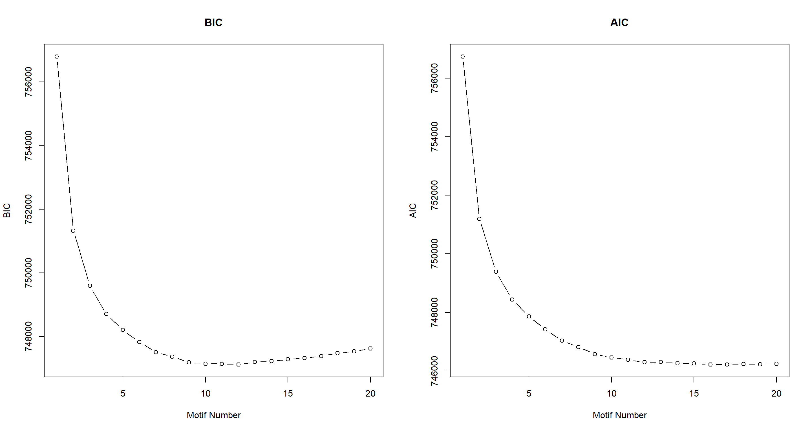
plotMotif(motif.fitted)
cols <- gray(seq(1, 0, length.out = 6))
legend(
"topright",
legend = seq(0, 1, length.out = 6),
fill = cols,
border = "black",
title = "Posterior probability")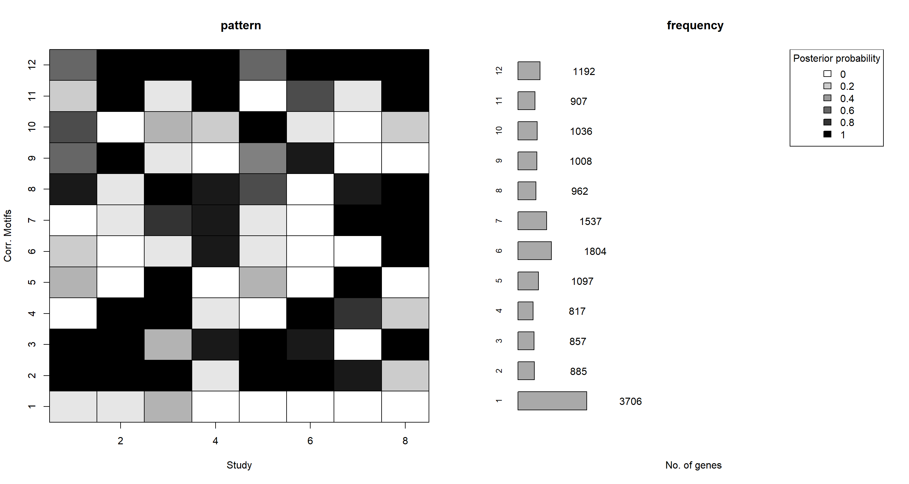
# Studies Human Day0 - 1. HDay2, 2. HDay5, 3. HDay15, 4. HDay30
# Chimp Day0 - 5. CDay2, 6. CDay5, 7. CDay15, 8. CDay30motif.fit <- readRDS("data/Cormotif/concat/CorMotif_trajectory_k1_k20_No4_seed8_computer.RDS")
log2cpm <- readRDS("data/Cormotif/concat/Filt_logcpm_G1_SpTp_RNA_log2cpm_No4_NoRep.RDS")
#extract the posterior probability that these genes belong to motifs
gene_prob_ppost <- motif.fit$bestmotif$p.post
rownames(gene_prob_ppost) <- rownames(log2cpm)
saveRDS(gene_prob_ppost,"data/Cormotif/concat/RNA_gene_prob_CorMotif_trajectory_k1_k20_No4_seed8_computer.RDS")
#assign each gene to a motif with max post prob
assigned_motifs <- apply(gene_prob_ppost, 1, which.max)
max_probs <- apply(gene_prob_ppost, 1, max)
#combine these into a dataframe - motif assigned genes (p.post)
motif_assignment_df <- gene_prob_ppost %>%
as.data.frame() %>%
rownames_to_column("Gene") %>%
mutate(
Assigned_Motif = assigned_motifs[Gene],
Max_Probability = max_probs[Gene]
)
#make some histograms of the unfiltered data from Cormotif p.post
gene_prob_ppost %>%
as.data.frame() %>%
ggplot(., aes(x = V1))+
geom_histogram(bins = 50)+
xlim(0,1)+
ggtitle("Cormtif p.post RNA V1")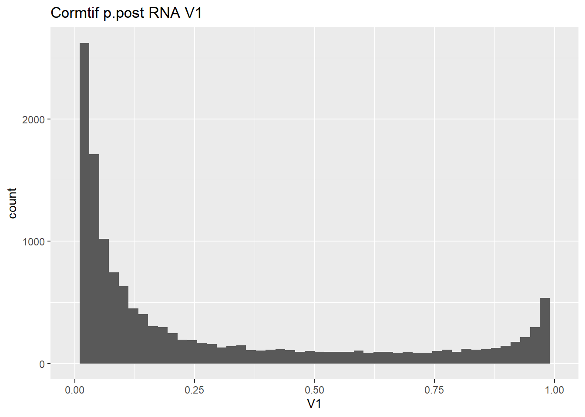
gene_prob_ppost %>%
as.data.frame() %>%
ggplot(., aes(x = V2))+
geom_histogram(bins = 50)+
xlim(0,1)+
ggtitle("Cormtif p.post RNA V2")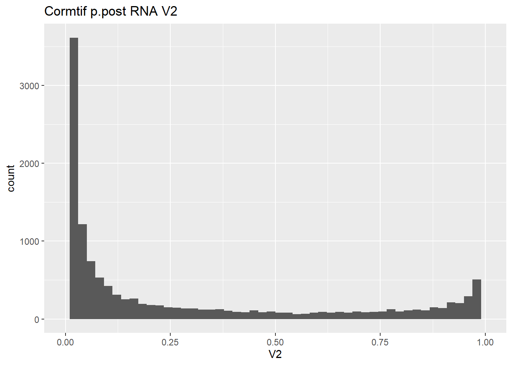
gene_prob_ppost %>%
as.data.frame() %>%
ggplot(., aes(x = V3))+
geom_histogram(bins = 50)+
xlim(0,1)+
ggtitle("Cormtif p.post RNA V3")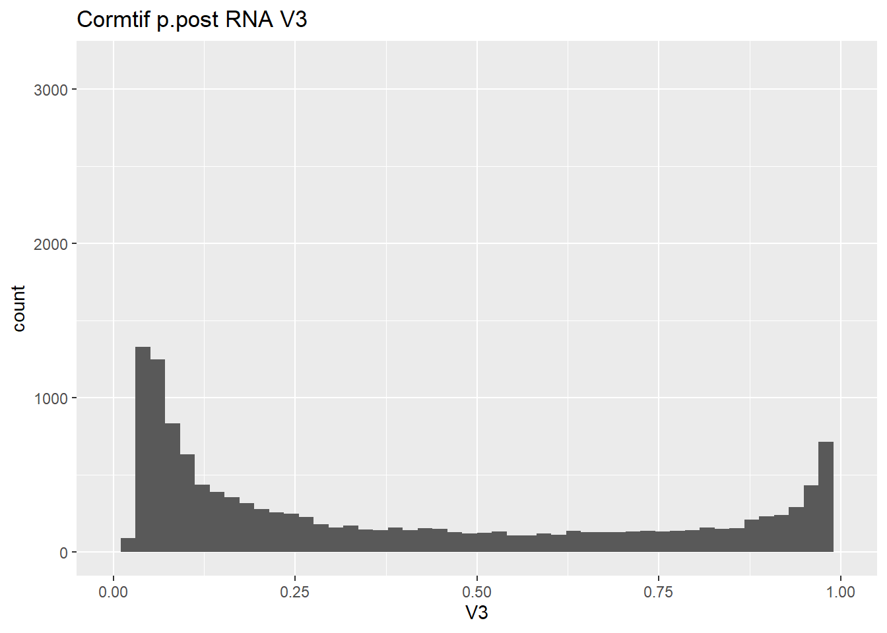
gene_prob_ppost %>%
as.data.frame() %>%
ggplot(., aes(x = V4))+
geom_histogram(bins = 50)+
xlim(0,1)+
ggtitle("Cormtif p.post RNA V4")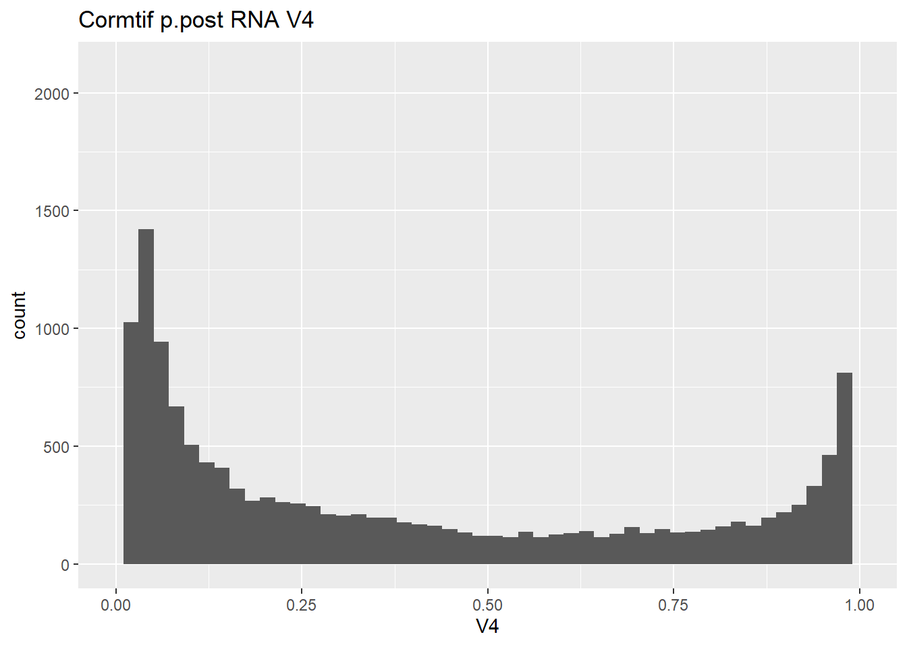
gene_prob_ppost %>%
as.data.frame() %>%
ggplot(., aes(x = V5))+
geom_histogram(bins = 50)+
xlim(0,1)+
ggtitle("Cormtif p.post RNA V5")gene_prob_ppost %>%
as.data.frame() %>%
ggplot(., aes(x = V6))+
geom_histogram(bins = 50)+
xlim(0,1)+
ggtitle("Cormtif p.post RNA V6")gene_prob_ppost %>%
as.data.frame() %>%
ggplot(., aes(x = V7))+
geom_histogram(bins = 50)+
xlim(0,1)+
ggtitle("Cormtif p.post RNA V7")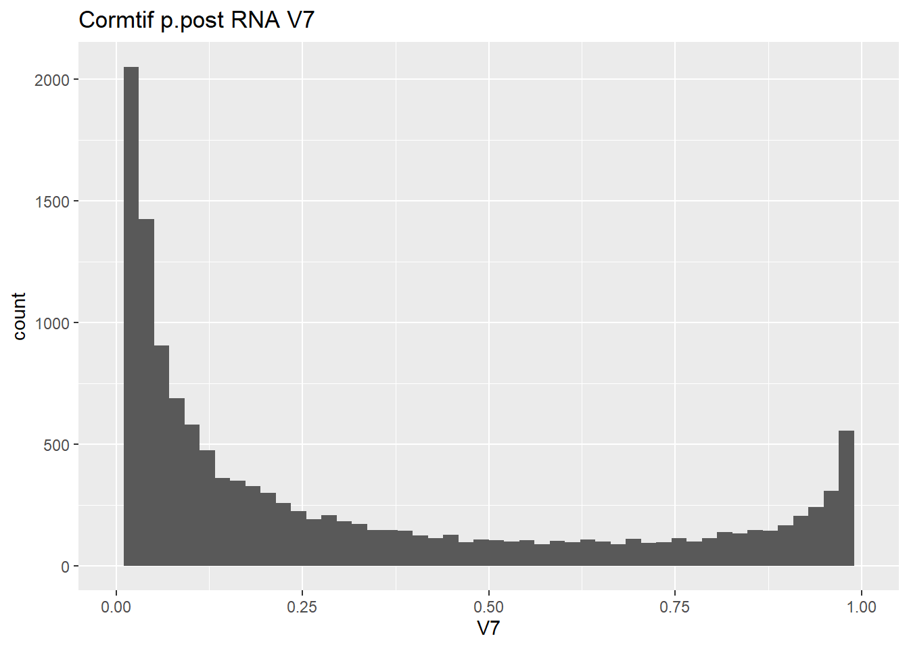
gene_prob_ppost %>%
as.data.frame() %>%
ggplot(., aes(x = V8))+
geom_histogram(bins = 50)+
xlim(0,1)+
ggtitle("Cormtif p.post RNA V8")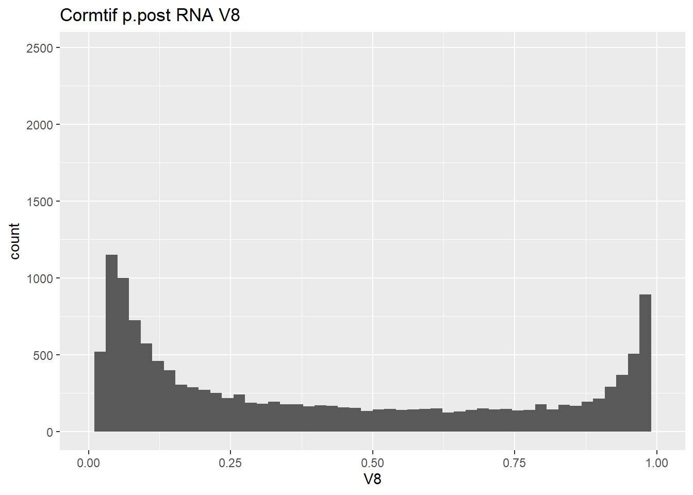
motif.fit <- readRDS("data/Cormotif/concat/CorMotif_trajectory_k1_k20_No4_seed8_computer.RDS")
log2cpm <- readRDS("data/Cormotif/concat/Filt_logcpm_G1_SpTp_RNA_log2cpm_No4_NoRep.RDS")
gene_prob_ppost <- readRDS("data/Cormotif/concat/RNA_gene_prob_CorMotif_trajectory_k1_k20_No4_seed8_computer.RDS")
TopTable <- readRDS("data/DGE/TopTable_Filt_logcpm_G1_SpTp_RNA_fc_NoRep_No4.RDS")
TopTable <- TopTable %>%
filter(Comparisons %in% c(
"H_Day02","H_Day25","H_Day515","H_Day1530","C_Day02","C_Day25","C_Day515","C_Day1530"
))
#extract the cluster likelihood - which DEGs are most likely to be in this cluster
motif_prob <- motif.fit$bestmotif$clustlike
rownames(motif_prob) <- rownames(gene_prob_ppost)
# saveRDS(motif_prob,"data/Cormotif/Species/RNA_motif_prob_Species.RDS")
# motif.fitted$bestmotif$clustlike
clust1_RNA <-
motif_prob %>%
as.data.frame() %>%
filter(V1 > 0.50 & V2 < 0.5 & V3 < 0.5 & V4 < 0.5 & V5 < 0.5 & V6 < 0.5 & V7 < 0.5 & V8 < 0.5 & V9 < 0.5 & V10 < 0.5 & V11 < 0.5 & V12 < 0.5) %>%
rownames()
print("clust1_RNA")[1] "clust1_RNA"length(clust1_RNA)[1] 3613clust2_RNA <-
motif_prob %>%
as.data.frame() %>%
filter(V1 < 0.5 & V2 > 0.5 & V3 < 0.5 & V4 < 0.5 & V5 < 0.5 & V6 < 0.5 & V7 < 0.5 & V8 < 0.5 & V9 < 0.5 & V10 < 0.5 & V11 < 0.5 & V12 < 0.5) %>%
rownames()
print("clust2_RNA")[1] "clust2_RNA"length(clust2_RNA)[1] 534clust3_RNA <-
motif_prob %>%
as.data.frame() %>%
filter(V1 < 0.5 & V2 < 0.5 & V3 > 0.5 & V4 < 0.5 & V5 < 0.5 & V6 < 0.5 & V7 < 0.5 & V8 < 0.5 & V9 < 0.5 & V10 < 0.5 & V11 < 0.5 & V12 < 0.5) %>%
rownames()
print("clust3_RNA")[1] "clust3_RNA"length(clust3_RNA)[1] 474clust4_RNA <-
motif_prob %>%
as.data.frame() %>%
filter(V1 < 0.5 & V2 < 0.5 & V3 < 0.5 & V4 > 0.5 & V5 < 0.5 & V6 < 0.5 & V7 < 0.5 & V8 < 0.5 & V9 < 0.5 & V10 < 0.5 & V11 < 0.5 & V12 < 0.5) %>%
rownames()
print("clust4_RNA")[1] "clust4_RNA"length(clust4_RNA)[1] 449clust5_RNA <-
motif_prob %>%
as.data.frame() %>%
filter(V1 < 0.5 & V2 < 0.5 & V3 < 0.5 & V4 < 0.5 & V5 > 0.5 & V6 < 0.5 & V7 < 0.5 & V8 < 0.5 & V9 < 0.5 & V10 < 0.5 & V11 < 0.5 & V12 < 0.5) %>%
rownames()
print("clust5_RNA")[1] "clust5_RNA"length(clust5_RNA)[1] 643clust6_RNA <-
motif_prob %>%
as.data.frame() %>%
filter(V1 < 0.5 & V2 < 0.5 & V3 < 0.5 & V4 < 0.5 & V5 < 0.5 & V6 > 0.5 & V7 < 0.5 & V8 < 0.5 & V9 < 0.5 & V10 < 0.5 & V11 < 0.5 & V12 < 0.5) %>%
rownames()
print("clust6_RNA")[1] "clust6_RNA"length(clust6_RNA)[1] 1147clust7_RNA <-
motif_prob %>%
as.data.frame() %>%
filter(V1 < 0.5 & V2 < 0.5 & V3 < 0.5 & V4 < 0.5 & V5 < 0.5 & V6 < 0.5 & V7 > 0.5 & V8 < 0.5 & V9 < 0.5 & V10 < 0.5 & V11 < 0.5 & V12 < 0.5) %>%
rownames()
print("clust7_RNA")[1] "clust7_RNA"length(clust7_RNA)[1] 1002clust8_RNA <-
motif_prob %>%
as.data.frame() %>%
filter(V1 < 0.5 & V2 < 0.5 & V3 < 0.5 & V4 < 0.5 & V5 < 0.5 & V6 < 0.5 & V7 < 0.5 & V8 > 0.5 & V9 < 0.5 & V10 < 0.5 & V11 < 0.5 & V12 < 0.5) %>%
rownames()
print("clust8_RNA")[1] "clust8_RNA"length(clust8_RNA)[1] 484clust9_RNA <-
motif_prob %>%
as.data.frame() %>%
filter(V1 < 0.5 & V2 < 0.5 & V3 < 0.5 & V4 < 0.5 & V5 < 0.5 & V6 < 0.5 & V7 < 0.5 & V8 < 0.5 & V9 > 0.5 & V10 < 0.5 & V11 < 0.5 & V12 < 0.5) %>%
rownames()
print("clust9_RNA")[1] "clust9_RNA"length(clust9_RNA)[1] 557clust10_RNA <-
motif_prob %>%
as.data.frame() %>%
filter(V1 < 0.5 & V2 < 0.5 & V3 < 0.5 & V4 < 0.5 & V5 < 0.5 & V6 < 0.5 & V7 < 0.5 & V8 < 0.5 & V9 < 0.5 & V10 > 0.5 & V11 < 0.5 & V12 < 0.5) %>%
rownames()
print("clust10_RNA")[1] "clust10_RNA"length(clust10_RNA)[1] 570clust11_RNA <-
motif_prob %>%
as.data.frame() %>%
filter(V1 < 0.5 & V2 < 0.5 & V3 < 0.5 & V4 < 0.5 & V5 < 0.5 & V6 < 0.5 & V7 < 0.5 & V8 < 0.5 & V9 < 0.5 & V10 < 0.5 & V11 > 0.5 & V12 < 0.5) %>%
rownames()
print("clust11_RNA")[1] "clust11_RNA"length(clust11_RNA)[1] 444clust12_RNA <-
motif_prob %>%
as.data.frame() %>%
filter(V1 < 0.5 & V2 < 0.5 & V3 < 0.5 & V4 < 0.5 & V5 < 0.5 & V6 < 0.5 & V7 < 0.5 & V8 < 0.5 & V9 < 0.5 & V10 < 0.5 & V11 < 0.5 & V12 > 0.5) %>%
rownames()
print("clust12_RNA")[1] "clust12_RNA"length(clust12_RNA)[1] 731clust_names_list <- list(
clust1_RNA,
clust2_RNA,
clust3_RNA,
clust4_RNA,
clust5_RNA,
clust6_RNA,
clust7_RNA,
clust8_RNA,
clust9_RNA,
clust10_RNA,
clust11_RNA,
clust12_RNA
)
names(clust_names_list) <- paste0("clust", 1:12)
print(overlap_matirx <- check_overlap(clust_names_list))$clust1
clust1 clust2 clust3 clust4 clust5 clust6 clust7 clust8 clust9 clust10
NA 0 0 0 0 0 0 0 0 0
clust11 clust12
0 0
$clust2
clust1 clust2 clust3 clust4 clust5 clust6 clust7 clust8 clust9 clust10
0 NA 0 0 0 0 0 0 0 0
clust11 clust12
0 0
$clust3
clust1 clust2 clust3 clust4 clust5 clust6 clust7 clust8 clust9 clust10
0 0 NA 0 0 0 0 0 0 0
clust11 clust12
0 0
$clust4
clust1 clust2 clust3 clust4 clust5 clust6 clust7 clust8 clust9 clust10
0 0 0 NA 0 0 0 0 0 0
clust11 clust12
0 0
$clust5
clust1 clust2 clust3 clust4 clust5 clust6 clust7 clust8 clust9 clust10
0 0 0 0 NA 0 0 0 0 0
clust11 clust12
0 0
$clust6
clust1 clust2 clust3 clust4 clust5 clust6 clust7 clust8 clust9 clust10
0 0 0 0 0 NA 0 0 0 0
clust11 clust12
0 0
$clust7
clust1 clust2 clust3 clust4 clust5 clust6 clust7 clust8 clust9 clust10
0 0 0 0 0 0 NA 0 0 0
clust11 clust12
0 0
$clust8
clust1 clust2 clust3 clust4 clust5 clust6 clust7 clust8 clust9 clust10
0 0 0 0 0 0 0 NA 0 0
clust11 clust12
0 0
$clust9
clust1 clust2 clust3 clust4 clust5 clust6 clust7 clust8 clust9 clust10
0 0 0 0 0 0 0 0 NA 0
clust11 clust12
0 0
$clust10
clust1 clust2 clust3 clust4 clust5 clust6 clust7 clust8 clust9 clust10
0 0 0 0 0 0 0 0 0 NA
clust11 clust12
0 0
$clust11
clust1 clust2 clust3 clust4 clust5 clust6 clust7 clust8 clust9 clust10
0 0 0 0 0 0 0 0 0 0
clust11 clust12
NA 0
$clust12
clust1 clust2 clust3 clust4 clust5 clust6 clust7 clust8 clust9 clust10
0 0 0 0 0 0 0 0 0 0
clust11 clust12
0 NA TopTable$AbsFC <- abs(TopTable$logFC)
cluster_names <- c("clust1_RNA","clust2_RNA","clust3_RNA","clust4_RNA","clust5_RNA","clust6_RNA","clust7_RNA","clust8_RNA","clust9_RNA","clust10_RNA","clust11_RNA","clust12_RNA")
cluster_lists <- list(
clust1_RNA,
clust2_RNA,
clust3_RNA,
clust4_RNA,
clust5_RNA,
clust6_RNA,
clust7_RNA,
clust8_RNA,
clust9_RNA,
clust10_RNA,
clust11_RNA,
clust12_RNA
)
cluster_plots <- lapply(names(clust_names_list), function(clust_name) {
plot_cluster_fc_sig(clust_names_list[[clust_name]], clust_name, TopTable)
})clust1 : 28904 rows, 3613 unique genes
Pairwise comparisons using Wilcoxon rank sum test with continuity correction
data: df$logFC and df$Comparisons
H_Day02 H_Day25 H_Day515 H_Day1530 C_Day02 C_Day25 C_Day515
H_Day25 9.9e-05 - - - - - -
H_Day515 < 2e-16 < 2e-16 - - - - -
H_Day1530 < 2e-16 < 2e-16 3.1e-05 - - - -
C_Day02 0.00029 0.35919 < 2e-16 < 2e-16 - - -
C_Day25 0.01050 0.01940 < 2e-16 < 2e-16 0.06756 - -
C_Day515 1.8e-14 < 2e-16 0.00019 < 2e-16 < 2e-16 < 2e-16 -
C_Day1530 < 2e-16 < 2e-16 0.02678 0.01940 < 2e-16 < 2e-16 8.2e-14
P value adjustment method: BH
clust2 : 4272 rows, 534 unique genes
Pairwise comparisons using Wilcoxon rank sum test with continuity correction
data: df$logFC and df$Comparisons
H_Day02 H_Day25 H_Day515 H_Day1530 C_Day02 C_Day25 C_Day515
H_Day25 0.08293 - - - - - -
H_Day515 0.28458 0.54732 - - - - -
H_Day1530 2.7e-05 0.00989 0.06232 - - - -
C_Day02 0.00544 0.34128 0.13086 0.00544 - - -
C_Day25 0.59064 0.27881 0.58891 0.00152 0.03569 - -
C_Day515 0.00055 0.11660 0.02490 0.85867 0.46935 0.00544 -
C_Day1530 4.9e-05 0.02286 0.08293 0.45159 0.01201 0.00288 0.72860
P value adjustment method: BH
clust3 : 3792 rows, 474 unique genes
Pairwise comparisons using Wilcoxon rank sum test with continuity correction
data: df$logFC and df$Comparisons
H_Day02 H_Day25 H_Day515 H_Day1530 C_Day02 C_Day25 C_Day515
H_Day25 0.00045 - - - - - -
H_Day515 0.93750 0.00436 - - - - -
H_Day1530 0.34566 6.3e-07 5.9e-10 - - - -
C_Day02 0.00542 0.43098 0.01123 0.00036 - - -
C_Day25 0.00436 0.81099 0.00389 1.7e-06 0.87012 - -
C_Day515 0.00840 0.87012 4.2e-11 < 2e-16 0.89532 0.87012 -
C_Day1530 0.00614 8.9e-11 2.4e-15 0.09079 1.1e-07 5.2e-10 < 2e-16
P value adjustment method: BH
clust4 : 3592 rows, 449 unique genes
Pairwise comparisons using Wilcoxon rank sum test with continuity correction
data: df$logFC and df$Comparisons
H_Day02 H_Day25 H_Day515 H_Day1530 C_Day02 C_Day25 C_Day515
H_Day25 < 2e-16 - - - - - -
H_Day515 3.4e-06 0.00071 - - - - -
H_Day1530 < 2e-16 2.1e-05 0.37181 - - - -
C_Day02 4.9e-10 2.5e-09 0.01306 5.1e-13 - - -
C_Day25 7.8e-15 0.65545 0.00374 1.7e-05 9.3e-09 - -
C_Day515 1.2e-12 0.03240 0.20322 0.08854 2.9e-05 0.08677 -
C_Day1530 < 2e-16 8.2e-06 0.25315 0.97886 5.1e-13 5.8e-06 0.05503
P value adjustment method: BH
clust5 : 5144 rows, 643 unique genes
Pairwise comparisons using Wilcoxon rank sum test with continuity correction
data: df$logFC and df$Comparisons
H_Day02 H_Day25 H_Day515 H_Day1530 C_Day02 C_Day25 C_Day515
H_Day25 5.1e-14 - - - - - -
H_Day515 1.1e-05 0.6398 - - - - -
H_Day1530 < 2e-16 1.5e-11 0.5290 - - - -
C_Day02 0.0456 4.4e-08 0.0545 < 2e-16 - - -
C_Day25 1.8e-08 0.0167 0.4420 < 2e-16 0.0003 - -
C_Day515 6.1e-06 0.5052 0.9959 0.7414 0.0456 0.3380 -
C_Day1530 < 2e-16 8.9e-15 0.5339 0.4978 < 2e-16 < 2e-16 0.7525
P value adjustment method: BH
clust6 : 9176 rows, 1147 unique genes
Pairwise comparisons using Wilcoxon rank sum test with continuity correction
data: df$logFC and df$Comparisons
H_Day02 H_Day25 H_Day515 H_Day1530 C_Day02 C_Day25 C_Day515
H_Day25 0.6491 - - - - - -
H_Day515 0.0015 0.0012 - - - - -
H_Day1530 < 2e-16 < 2e-16 < 2e-16 - - - -
C_Day02 0.2214 0.4851 0.0347 < 2e-16 - - -
C_Day25 0.0051 0.0039 0.6491 < 2e-16 0.0728 - -
C_Day515 0.2866 0.2344 3.9e-07 < 2e-16 0.0546 3.2e-06 -
C_Day1530 < 2e-16 < 2e-16 < 2e-16 0.2344 < 2e-16 < 2e-16 < 2e-16
P value adjustment method: BH
clust7 : 8016 rows, 1002 unique genes
Pairwise comparisons using Wilcoxon rank sum test with continuity correction
data: df$logFC and df$Comparisons
H_Day02 H_Day25 H_Day515 H_Day1530 C_Day02 C_Day25 C_Day515
H_Day25 0.90422 - - - - - -
H_Day515 < 2e-16 < 2e-16 - - - - -
H_Day1530 < 2e-16 < 2e-16 0.13084 - - - -
C_Day02 0.00839 0.02009 < 2e-16 < 2e-16 - - -
C_Day25 0.14666 0.12905 < 2e-16 < 2e-16 1.1e-05 - -
C_Day515 < 2e-16 < 2e-16 0.00014 0.00014 < 2e-16 < 2e-16 -
C_Day1530 < 2e-16 < 2e-16 0.44448 0.20526 < 2e-16 < 2e-16 6.4e-06
P value adjustment method: BH
clust8 : 3872 rows, 484 unique genes
Pairwise comparisons using Wilcoxon rank sum test with continuity correction
data: df$logFC and df$Comparisons
H_Day02 H_Day25 H_Day515 H_Day1530 C_Day02 C_Day25 C_Day515
H_Day25 8.9e-06 - - - - - -
H_Day515 0.7746 < 2e-16 - - - - -
H_Day1530 0.2393 < 2e-16 0.0964 - - - -
C_Day02 0.0616 1.1e-05 0.0045 0.1293 - - -
C_Day25 0.0036 0.0083 6.2e-15 3.4e-13 0.0055 - -
C_Day515 0.0068 3.1e-12 0.0048 0.2426 0.9299 3.5e-08 -
C_Day1530 0.9299 < 2e-16 0.4820 0.5083 0.0201 1.5e-13 0.0630
P value adjustment method: BH
clust9 : 4456 rows, 557 unique genes
Pairwise comparisons using Wilcoxon rank sum test with continuity correction
data: df$logFC and df$Comparisons
H_Day02 H_Day25 H_Day515 H_Day1530 C_Day02 C_Day25 C_Day515
H_Day25 0.0068 - - - - - -
H_Day515 0.9577 3.1e-05 - - - - -
H_Day1530 2.6e-07 1.1e-11 < 2e-16 - - - -
C_Day02 0.0013 6.7e-10 0.0021 0.0060 - - -
C_Day25 0.0016 0.6847 8.0e-06 9.6e-14 1.8e-11 - -
C_Day515 0.0031 2.6e-09 2.3e-06 3.0e-05 0.8409 1.3e-10 -
C_Day1530 7.8e-08 1.8e-11 < 2e-16 0.4938 0.0021 1.2e-13 6.5e-07
P value adjustment method: BH
clust10 : 4560 rows, 570 unique genes
Pairwise comparisons using Wilcoxon rank sum test with continuity correction
data: df$logFC and df$Comparisons
H_Day02 H_Day25 H_Day515 H_Day1530 C_Day02 C_Day25 C_Day515
H_Day25 0.00023 - - - - - -
H_Day515 0.00200 0.83766 - - - - -
H_Day1530 5.9e-06 0.04724 0.04724 - - - -
C_Day02 0.04724 0.06250 0.31146 0.03639 - - -
C_Day25 0.13023 6.5e-06 0.00029 5.2e-09 0.56798 - -
C_Day515 3.4e-06 0.02944 0.03550 0.94485 0.03550 4.0e-11 -
C_Day1530 4.5e-07 4.0e-05 0.00023 0.07698 0.05233 < 2e-16 0.04724
P value adjustment method: BH
clust11 : 3552 rows, 444 unique genes
Pairwise comparisons using Wilcoxon rank sum test with continuity correction
data: df$logFC and df$Comparisons
H_Day02 H_Day25 H_Day515 H_Day1530 C_Day02 C_Day25 C_Day515
H_Day25 < 2e-16 - - - - - -
H_Day515 1.3e-05 1.5e-15 - - - - -
H_Day1530 1.1e-15 < 2e-16 < 2e-16 - - - -
C_Day02 3.1e-12 1.6e-11 0.0057 < 2e-16 - - -
C_Day25 < 2e-16 0.6834 < 2e-16 < 2e-16 2.4e-12 - -
C_Day515 3.1e-15 1.9e-08 8.0e-05 < 2e-16 0.1929 7.7e-09 -
C_Day1530 1.5e-11 < 2e-16 < 2e-16 0.1916 < 2e-16 < 2e-16 < 2e-16
P value adjustment method: BH
clust12 : 5848 rows, 731 unique genes
Pairwise comparisons using Wilcoxon rank sum test with continuity correction
data: df$logFC and df$Comparisons
H_Day02 H_Day25 H_Day515 H_Day1530 C_Day02 C_Day25 C_Day515
H_Day25 < 2e-16 - - - - - -
H_Day515 0.0343 < 2e-16 - - - - -
H_Day1530 0.0018 < 2e-16 0.9536 - - - -
C_Day02 3.6e-11 0.0018 7.8e-14 < 2e-16 - - -
C_Day25 6.1e-12 0.0855 8.2e-13 8.0e-15 0.0926 - -
C_Day515 0.5857 1.9e-10 0.0018 0.0016 3.9e-07 7.9e-06 -
C_Day1530 0.0074 < 2e-16 0.9272 0.7240 < 2e-16 8.1e-14 0.0058
P value adjustment method: BH names(cluster_plots) <- names(clust_names_list)
for (p in cluster_plots) print(p)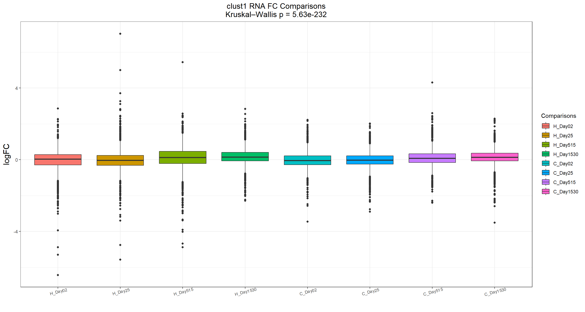
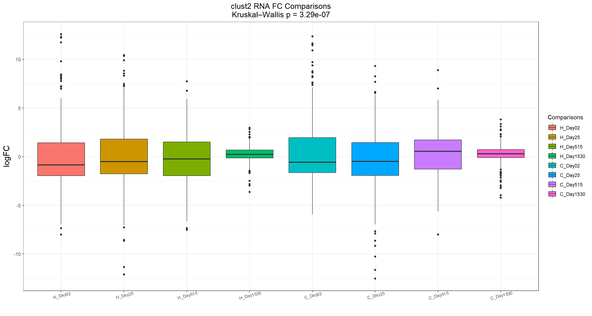
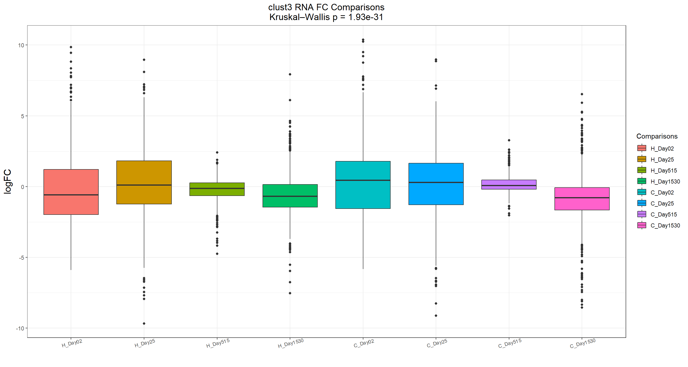
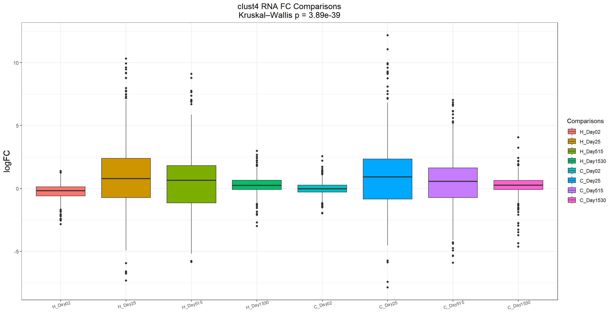
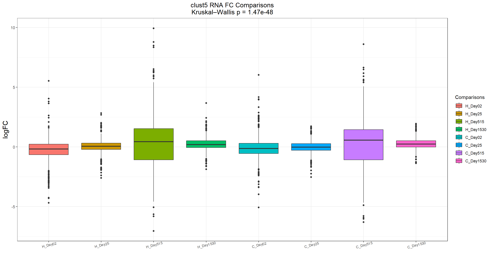
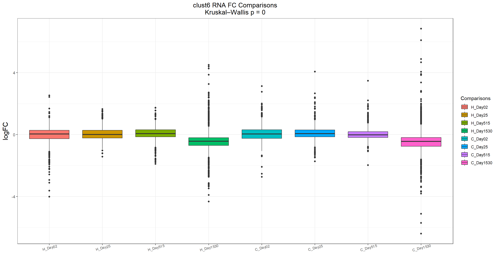
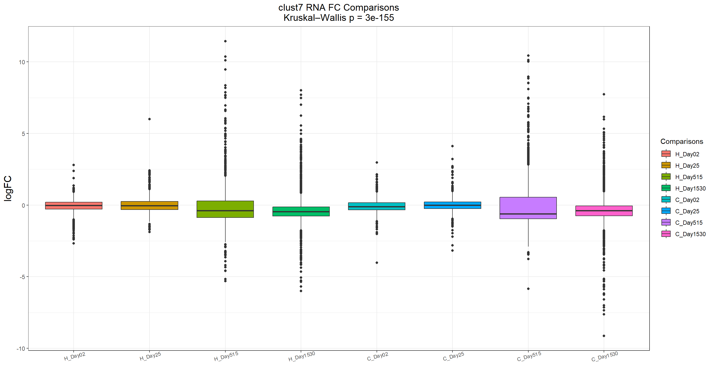
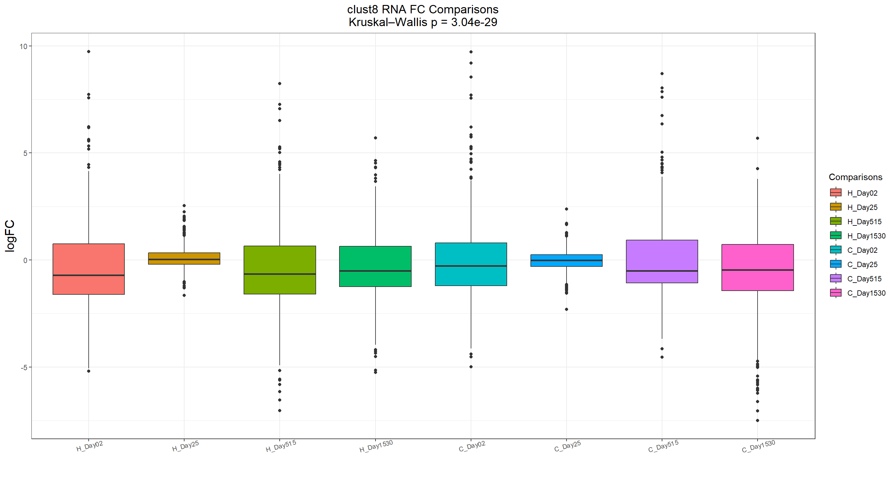
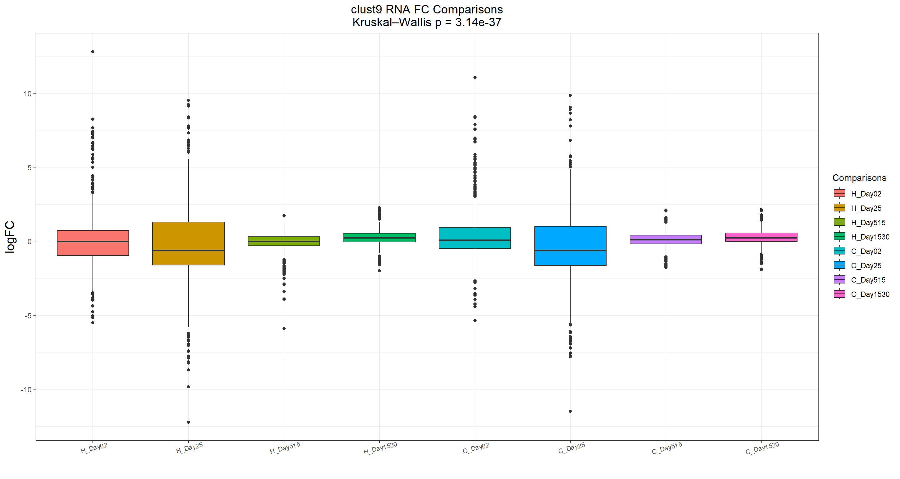
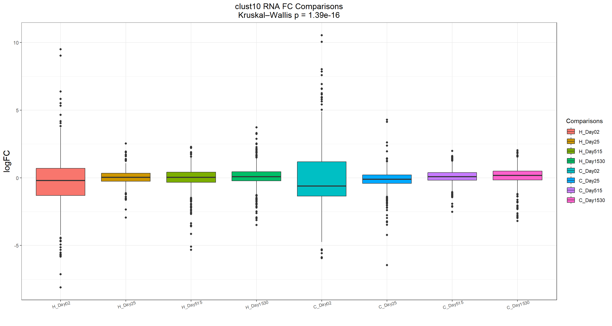
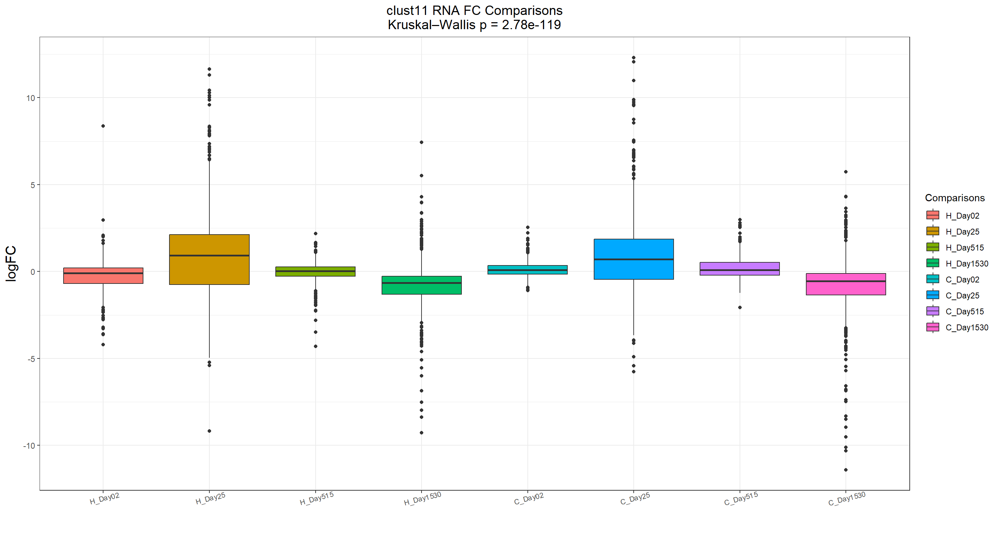
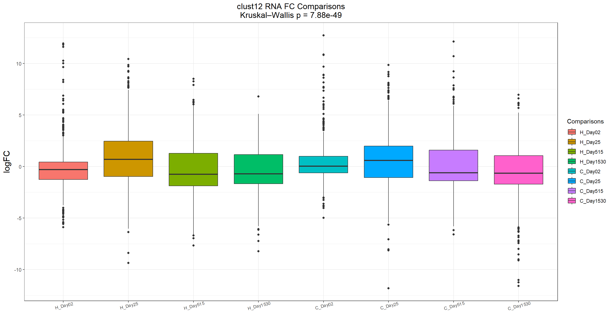
cluster_plots <- lapply(names(clust_names_list), function(clust_name) {
plot_cluster_absfc_sig(clust_names_list[[clust_name]], clust_name, TopTable)
})clust1 : 28904 rows, 3613 unique genes
Pairwise comparisons using Wilcoxon rank sum test with continuity correction
data: df$AbsFC and df$Comparisons
H_Day02 H_Day25 H_Day515 H_Day1530 C_Day02 C_Day25 C_Day515
H_Day25 0.3387 - - - - - -
H_Day515 8.7e-14 < 2e-16 - - - - -
H_Day1530 6.8e-08 1.6e-05 < 2e-16 - - - -
C_Day02 9.2e-12 8.1e-09 < 2e-16 0.2743 - - -
C_Day25 < 2e-16 < 2e-16 < 2e-16 1.5e-06 7.7e-05 - -
C_Day515 6.0e-15 1.3e-11 < 2e-16 0.0395 0.2851 0.0038 -
C_Day1530 < 2e-16 1.5e-14 < 2e-16 0.0016 0.0287 0.1226 0.2382
P value adjustment method: BH
clust2 : 4272 rows, 534 unique genes
Pairwise comparisons using Wilcoxon rank sum test with continuity correction
data: df$AbsFC and df$Comparisons
H_Day02 H_Day25 H_Day515 H_Day1530 C_Day02 C_Day25 C_Day515
H_Day25 0.8572 - - - - - -
H_Day515 0.2588 0.2022 - - - - -
H_Day1530 <2e-16 <2e-16 <2e-16 - - - -
C_Day02 0.6592 0.5750 0.5386 <2e-16 - - -
C_Day25 0.7810 0.6592 0.4493 <2e-16 0.8986 - -
C_Day515 0.0017 0.0010 0.0732 <2e-16 0.0106 0.0059 -
C_Day1530 <2e-16 <2e-16 <2e-16 0.0623 <2e-16 <2e-16 <2e-16
P value adjustment method: BH
clust3 : 3792 rows, 474 unique genes
Pairwise comparisons using Wilcoxon rank sum test with continuity correction
data: df$AbsFC and df$Comparisons
H_Day02 H_Day25 H_Day515 H_Day1530 C_Day02 C_Day25 C_Day515
H_Day25 0.14099 - - - - - -
H_Day515 < 2e-16 < 2e-16 - - - - -
H_Day1530 5.5e-14 2.7e-09 < 2e-16 - - - -
C_Day02 0.83847 0.09214 < 2e-16 2.4e-15 - - -
C_Day25 0.10563 0.88203 < 2e-16 1.1e-08 0.05752 - -
C_Day515 < 2e-16 < 2e-16 0.00071 < 2e-16 < 2e-16 < 2e-16 -
C_Day1530 1.1e-08 1.9e-05 < 2e-16 0.23660 1.5e-09 3.9e-05 < 2e-16
P value adjustment method: BH
clust4 : 3592 rows, 449 unique genes
Pairwise comparisons using Wilcoxon rank sum test with continuity correction
data: df$AbsFC and df$Comparisons
H_Day02 H_Day25 H_Day515 H_Day1530 C_Day02 C_Day25 C_Day515
H_Day25 < 2e-16 - - - - - -
H_Day515 < 2e-16 0.93479 - - - - -
H_Day1530 0.00885 < 2e-16 < 2e-16 - - - -
C_Day02 0.02199 < 2e-16 < 2e-16 3.9e-07 - - -
C_Day25 < 2e-16 0.25234 0.24227 < 2e-16 < 2e-16 - -
C_Day515 < 2e-16 0.00013 9.2e-05 < 2e-16 < 2e-16 3.7e-07 -
C_Day1530 0.00124 < 2e-16 < 2e-16 0.59158 1.1e-08 < 2e-16 < 2e-16
P value adjustment method: BH
clust5 : 5144 rows, 643 unique genes
Pairwise comparisons using Wilcoxon rank sum test with continuity correction
data: df$AbsFC and df$Comparisons
H_Day02 H_Day25 H_Day515 H_Day1530 C_Day02 C_Day25 C_Day515
H_Day25 4.0e-15 - - - - - -
H_Day515 < 2e-16 < 2e-16 - - - - -
H_Day1530 3.5e-08 0.0171 < 2e-16 - - - -
C_Day02 0.5135 < 2e-16 < 2e-16 2.2e-10 - - -
C_Day25 1.2e-15 0.7925 < 2e-16 0.0214 < 2e-16 - -
C_Day515 < 2e-16 < 2e-16 0.7814 < 2e-16 < 2e-16 < 2e-16 -
C_Day1530 3.4e-07 0.0011 < 2e-16 0.5135 2.8e-09 0.0012 < 2e-16
P value adjustment method: BH
clust6 : 9176 rows, 1147 unique genes
Pairwise comparisons using Wilcoxon rank sum test with continuity correction
data: df$AbsFC and df$Comparisons
H_Day02 H_Day25 H_Day515 H_Day1530 C_Day02 C_Day25 C_Day515
H_Day25 6.6e-05 - - - - - -
H_Day515 2.2e-07 0.18704 - - - - -
H_Day1530 < 2e-16 < 2e-16 < 2e-16 - - - -
C_Day02 0.54417 0.00054 2.7e-06 < 2e-16 - - -
C_Day25 1.2e-08 0.06144 0.62993 < 2e-16 2.0e-07 - -
C_Day515 < 2e-16 7.1e-06 0.00294 < 2e-16 6.9e-15 0.01397 -
C_Day1530 < 2e-16 < 2e-16 < 2e-16 0.82910 < 2e-16 < 2e-16 < 2e-16
P value adjustment method: BH
clust7 : 8016 rows, 1002 unique genes
Pairwise comparisons using Wilcoxon rank sum test with continuity correction
data: df$AbsFC and df$Comparisons
H_Day02 H_Day25 H_Day515 H_Day1530 C_Day02 C_Day25 C_Day515
H_Day25 9.1e-06 - - - - - -
H_Day515 < 2e-16 < 2e-16 - - - - -
H_Day1530 < 2e-16 < 2e-16 0.1000 - - - -
C_Day02 0.0024 0.1428 < 2e-16 < 2e-16 - - -
C_Day25 0.8264 5.9e-06 < 2e-16 < 2e-16 0.0018 - -
C_Day515 < 2e-16 < 2e-16 1.5e-12 < 2e-16 < 2e-16 < 2e-16 -
C_Day1530 < 2e-16 < 2e-16 0.0069 0.1617 < 2e-16 < 2e-16 < 2e-16
P value adjustment method: BH
clust8 : 3872 rows, 484 unique genes
Pairwise comparisons using Wilcoxon rank sum test with continuity correction
data: df$AbsFC and df$Comparisons
H_Day02 H_Day25 H_Day515 H_Day1530 C_Day02 C_Day25 C_Day515
H_Day25 < 2e-16 - - - - - -
H_Day515 0.59307 < 2e-16 - - - - -
H_Day1530 1.3e-06 < 2e-16 7.3e-05 - - - -
C_Day02 2.0e-05 < 2e-16 0.00048 0.74385 - - -
C_Day25 < 2e-16 0.97808 < 2e-16 < 2e-16 < 2e-16 - -
C_Day515 0.00076 < 2e-16 0.01202 0.12724 0.26804 < 2e-16 -
C_Day1530 0.00797 < 2e-16 0.03172 0.12724 0.28811 < 2e-16 0.89796
P value adjustment method: BH
clust9 : 4456 rows, 557 unique genes
Pairwise comparisons using Wilcoxon rank sum test with continuity correction
data: df$AbsFC and df$Comparisons
H_Day02 H_Day25 H_Day515 H_Day1530 C_Day02 C_Day25 C_Day515
H_Day25 <2e-16 - - - - - -
H_Day515 <2e-16 <2e-16 - - - - -
H_Day1530 <2e-16 <2e-16 0.2218 - - - -
C_Day02 0.0024 <2e-16 <2e-16 <2e-16 - - -
C_Day25 <2e-16 0.1221 <2e-16 <2e-16 <2e-16 - -
C_Day515 <2e-16 <2e-16 0.7636 0.1211 <2e-16 <2e-16 -
C_Day1530 <2e-16 <2e-16 0.1759 0.8287 <2e-16 <2e-16 0.1056
P value adjustment method: BH
clust10 : 4560 rows, 570 unique genes
Pairwise comparisons using Wilcoxon rank sum test with continuity correction
data: df$AbsFC and df$Comparisons
H_Day02 H_Day25 H_Day515 H_Day1530 C_Day02 C_Day25 C_Day515
H_Day25 < 2e-16 - - - - - -
H_Day515 < 2e-16 9.2e-06 - - - - -
H_Day1530 < 2e-16 0.00019 0.59878 - - - -
C_Day02 1.2e-11 < 2e-16 < 2e-16 < 2e-16 - - -
C_Day25 < 2e-16 0.08103 0.01760 0.08190 < 2e-16 - -
C_Day515 < 2e-16 0.94249 3.6e-05 0.00045 < 2e-16 0.10435 -
C_Day1530 < 2e-16 4.0e-05 0.58178 0.99332 < 2e-16 0.06061 0.00022
P value adjustment method: BH
clust11 : 3552 rows, 444 unique genes
Pairwise comparisons using Wilcoxon rank sum test with continuity correction
data: df$AbsFC and df$Comparisons
H_Day02 H_Day25 H_Day515 H_Day1530 C_Day02 C_Day25 C_Day515
H_Day25 < 2e-16 - - - - - -
H_Day515 6.2e-07 < 2e-16 - - - - -
H_Day1530 < 2e-16 3.6e-13 < 2e-16 - - - -
C_Day02 1.8e-08 < 2e-16 0.56829 < 2e-16 - - -
C_Day25 < 2e-16 1.5e-05 < 2e-16 0.02006 < 2e-16 - -
C_Day515 0.01816 < 2e-16 0.00208 < 2e-16 0.00019 < 2e-16 -
C_Day1530 < 2e-16 1.4e-14 < 2e-16 0.21057 < 2e-16 0.00077 < 2e-16
P value adjustment method: BH
clust12 : 5848 rows, 731 unique genes
Pairwise comparisons using Wilcoxon rank sum test with continuity correction
data: df$AbsFC and df$Comparisons
H_Day02 H_Day25 H_Day515 H_Day1530 C_Day02 C_Day25 C_Day515
H_Day25 < 2e-16 - - - - - -
H_Day515 < 2e-16 0.75079 - - - - -
H_Day1530 < 2e-16 0.00029 0.00054 - - - -
C_Day02 0.13101 < 2e-16 < 2e-16 < 2e-16 - - -
C_Day25 < 2e-16 0.75079 0.88113 0.00138 < 2e-16 - -
C_Day515 < 2e-16 0.03775 0.04384 0.15477 < 2e-16 0.10032 -
C_Day1530 < 2e-16 0.00029 0.00070 0.88113 < 2e-16 0.00100 0.12260
P value adjustment method: BH names(cluster_plots) <- names(clust_names_list)
for (p in cluster_plots) print(p)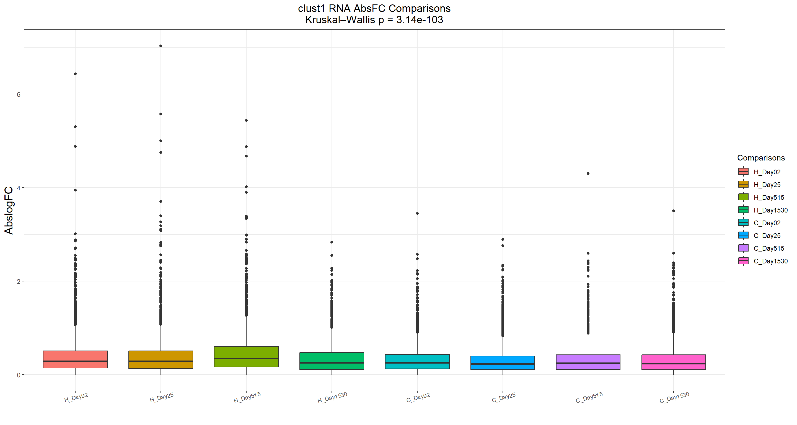
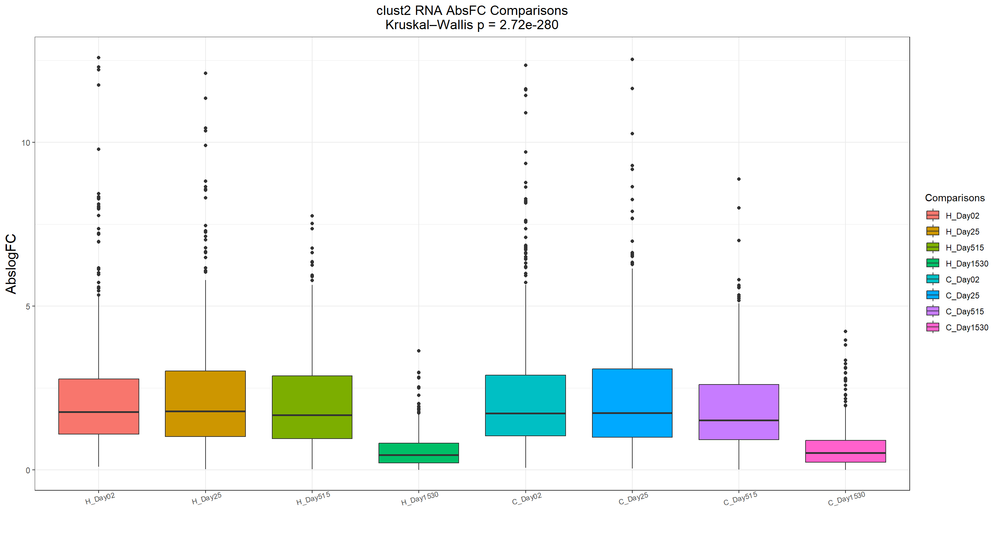
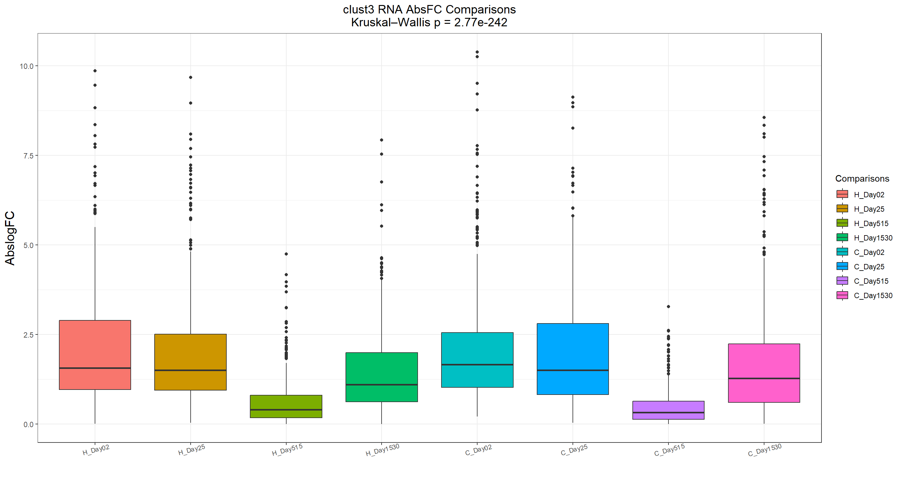
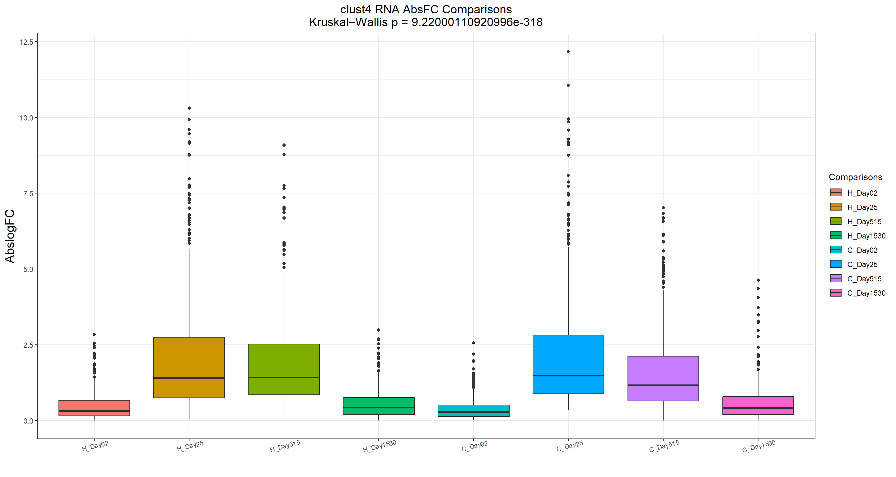
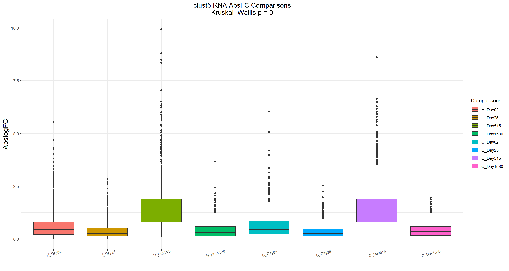
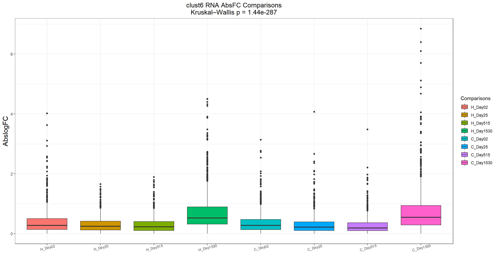
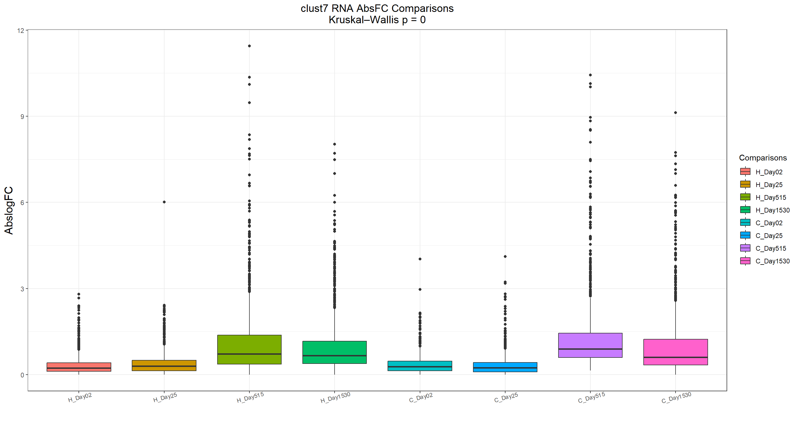
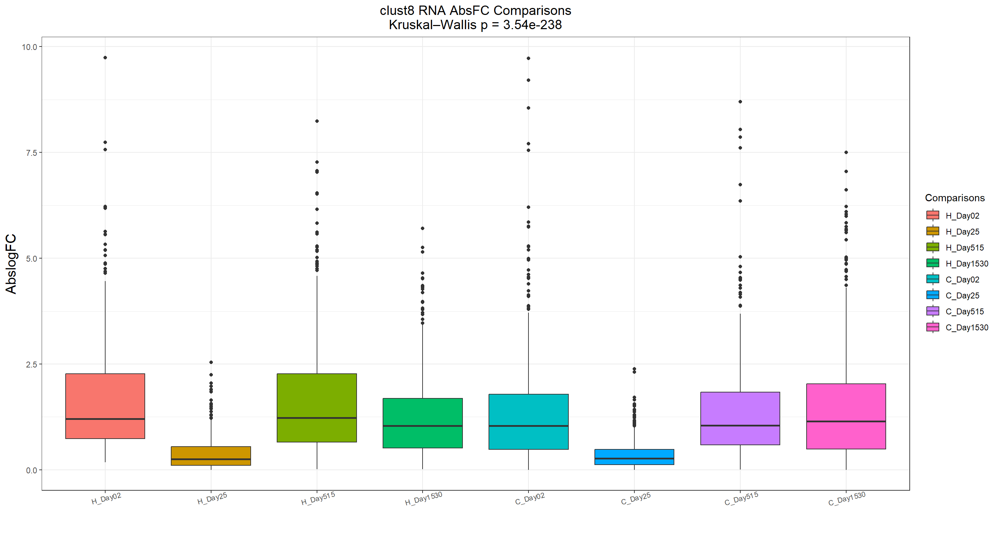
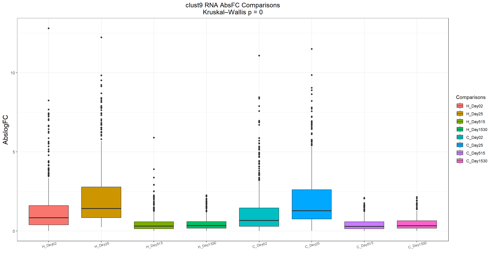
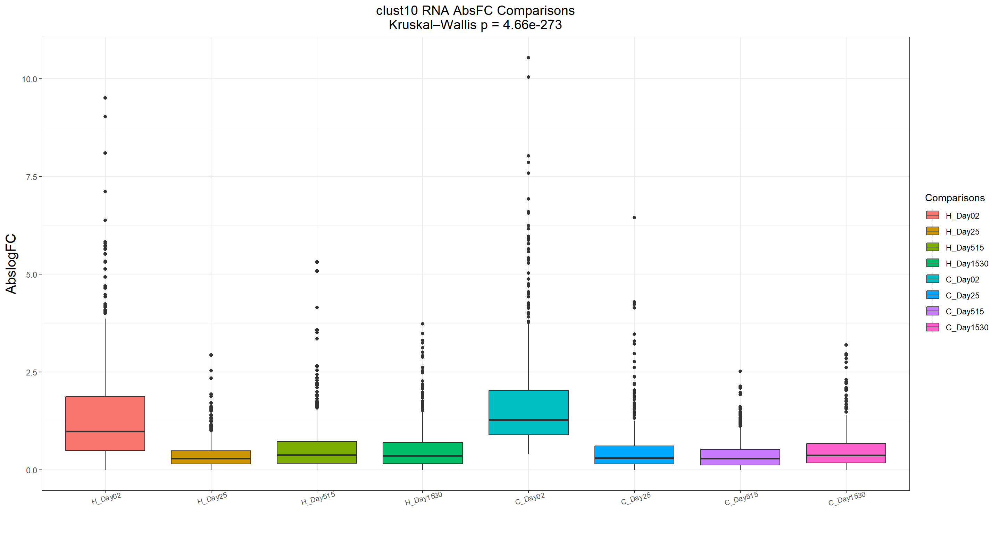
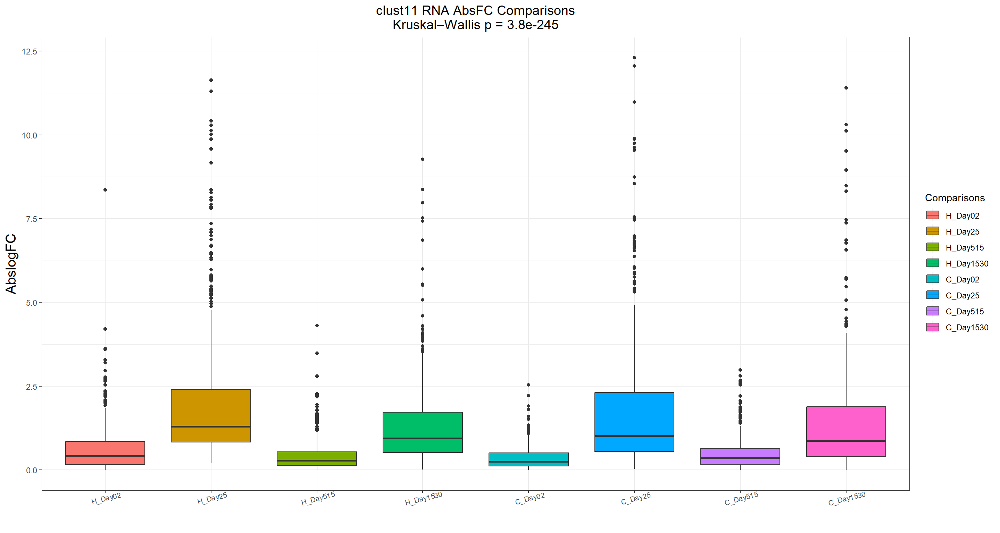
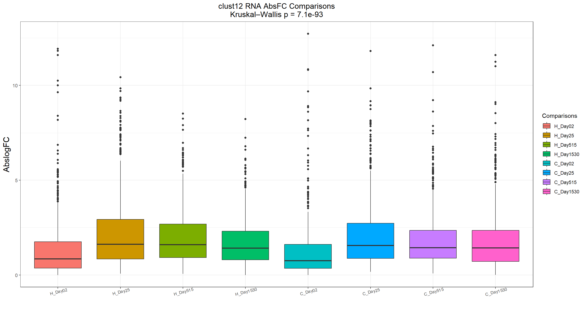
all_genes <- unique(TopTable$Gene)
convert_to_entrez_df <- function(genes) {
genes <- sub("\\..*", "", genes)
bitr(
genes,
fromType = "ENSEMBL",
toType = "ENTREZID",
OrgDb = org.Hs.eg.db
) %>% distinct()
}
background_entrez <- convert_to_entrez_df(all_genes)$ENTREZID
gost_results <- setNames(
lapply(names(clust_names_list), function(clust_name) {
genes <- clust_names_list[[clust_name]]
entrez_df <- convert_to_entrez_df(genes)
if (nrow(entrez_df) == 0) return(NULL)
gost(
query = entrez_df$ENTREZID,
organism = "hsapiens",
significant = FALSE,
ordered_query = FALSE, # TRUE only if ranked
domain_scope = "custom",
measure_underrepresentation = FALSE,
evcodes = FALSE,
numeric_ns = "ENTREZGENE",
user_threshold = 0.05,
correction_method = "fdr",
custom_bg = background_entrez,
sources = c("GO:BP", "KEGG")
)
}),
names(clust_names_list)
)
gost_combined <- do.call(rbind, lapply(names(gost_results), function(clust_name) {
res <- gost_results[[clust_name]]
if (is.null(res)) return(NULL)
df <- res$result
df$Cluster <- clust_name
df
}))
saveRDS(gost_results, "data/Cormotif/concat/gost_all_clusters_trajectories.RDS")
gost_export <- gost_combined
gost_export[] <- lapply(gost_export, function(col) {
if (is.list(col)) {
sapply(col, paste, collapse = ";")
} else {
col
}
})
write.csv(gost_export,
"data/Cormotif/concat/gost_all_clusters_trajectories.csv",
row.names = FALSE)top_terms <- gost_combined %>%
filter(source == "GO:BP") %>% # keep only BP terms
group_by(Cluster) %>%
slice_min(p_value, n = 10) %>% # top 10 per cluster
ungroup()
cluster_list <- split(top_terms, top_terms$Cluster)
library(ggplot2)
for (clust_name in names(cluster_list)) {
df <- cluster_list[[clust_name]]
p <- ggplot(df,
aes(x = Cluster, y = term_name, fill = -log10(p_value))) +
geom_tile(color = "white") +
scale_fill_gradient(low = "grey90", high = "firebrick") +
labs(fill = "-log10(p-value)",
x = "Cluster",
y = "GO Term") +
theme_minimal() +
theme(axis.text.y = element_text(size = 8))
print(p) # display in RStudio
# Optional: save each plot as a file
ggsave(filename = paste0("GO_heatmap_", clust_name, ".png"),
plot = p,
width = 6, height = 4)
}


library(dplyr)
library(ggplot2)
top_terms <- gost_combined %>%
filter(source == "GO:BP",
p_value < 0.05) %>%
group_by(Cluster) %>%
slice_min(p_value, n = 3, with_ties = FALSE) %>%
ungroup() %>%
mutate(
Cluster_num = as.numeric(gsub("clust", "", Cluster)),
term_label = paste0(Cluster, " : ", term_name)
) %>%
arrange(desc(Cluster_num))
top_terms$term_label <- factor(
top_terms$term_label,
levels = rev(top_terms$term_label)
)
ggplot(top_terms,
aes(x = 1,
y = term_label,
fill = -log10(p_value))) +
geom_tile(color = "white", width = 0.8) +
geom_text(aes(label = Cluster), size = 3) +
scale_fill_gradient(low = "grey90", high = "firebrick") +
labs(fill = "-log10(p-value)",
x = NULL,
y = NULL) +
theme_minimal() +
theme(
axis.text.x = element_blank(),
axis.ticks.x = element_blank(),
axis.text.y = element_text(size = 8),
panel.grid = element_blank()
)
top_terms <- gost_combined %>%
filter(source == "KEGG") %>% # keep only BP terms
group_by(Cluster) %>%
slice_min(p_value, n = 20) %>% # top 10 per cluster
ungroup()
cluster_list <- split(top_terms, top_terms$Cluster)
library(ggplot2)
for (clust_name in names(cluster_list)) {
df <- cluster_list[[clust_name]]
p <- ggplot(df,
aes(x = Cluster, y = term_name, fill = -log10(p_value))) +
geom_tile(color = "white") +
scale_fill_gradient(low = "grey90", high = "firebrick") +
labs(fill = "-log10(p-value)",
x = "Cluster",
y = "KEGG Term") +
theme_minimal() +
theme(axis.text.y = element_text(size = 8))
print(p) # display in RStudio
# # Optional: save each plot as a file
# ggsave(filename = paste0("GO_heatmap_", clust_name, ".png"),
# plot = p,
# width = 6, height = 4)
}


library(dplyr)
library(tidyr)
library(ggplot2)
sig_thresh <- 0.05
# 1. For each cluster, keep significant terms and max 10 lowest p-values
top_sig_terms_per_cluster <- gost_combined %>%
filter(source == "GO:BP") %>%
group_by(Cluster) %>%
filter(p_value < sig_thresh) %>% # keep only significant
slice_min(order_by = p_value, n = 10, with_ties = FALSE) %>% # max 10 per cluster
ungroup()
# 2. Keep all unique terms across clusters
unique_terms <- unique(top_sig_terms_per_cluster$term_name)
# 3. Filter original gost_combined for these terms, retain p-values from all clusters
heatmap_data <- gost_combined %>%
filter(source == "GO:BP", term_name %in% unique_terms) %>%
mutate(logp = -log10(p_value)) %>%
select(Cluster, term_name, logp)
# 4. Pivot to wide format for matrix-style heatmap
heatmap_wide <- heatmap_data %>%
pivot_wider(names_from = Cluster, values_from = logp)
# 5. Convert to long format for ggplot
heatmap_long <- heatmap_wide %>%
pivot_longer(cols = -term_name, names_to = "Cluster", values_to = "logp")
# 6. Plot heatmap
ggplot(heatmap_long, aes(x = Cluster, y = term_name, fill = logp)) +
geom_tile(color = "white") +
scale_fill_gradient(low = "grey90", high = "firebrick", na.value = "white") +
labs(fill = "-log10(p-value)", x = "Cluster", y = "GO Term") +
theme_minimal() +
theme(axis.text.y = element_text(size = 6))
library(dplyr)
library(tidyr)
library(pheatmap)
# Prepare the matrix for clustering: rows = terms, columns = clusters
heatmap_matrix <- heatmap_wide %>%
column_to_rownames(var = "term_name") %>% # rows = GO terms
as.matrix()
# Optional: replace NAs with 0 for clustering (or leave NA if you want)
heatmap_matrix[is.na(heatmap_matrix)] <- 0
# Create clustered heatmap
pheatmap(
heatmap_matrix,
color = colorRampPalette(c("grey90", "firebrick"))(100),
cluster_rows = TRUE, # cluster GO terms
cluster_cols = TRUE, # cluster clusters
show_rownames = TRUE,
show_colnames = TRUE,
fontsize_row = 6,
fontsize_col = 8,
main = "GO:BP Enrichment Heatmap"
)
heatmap_long <- heatmap_long %>%
group_by(term_name) %>%
mutate(min_logp = min(logp, na.rm = TRUE)) %>%
ungroup() %>%
arrange(desc(min_logp)) %>%
mutate(term_name = factor(term_name, levels = unique(term_name)))
library(pheatmap)
# Create matrix: rows = GO terms, columns = clusters
heatmap_matrix <- heatmap_wide %>%
column_to_rownames("term_name") %>%
as.matrix()
# Replace NAs with 0 for clustering
heatmap_matrix[is.na(heatmap_matrix)] <- 0
pheatmap(
heatmap_matrix,
color = colorRampPalette(c("grey90", "firebrick"))(100),
cluster_cols = TRUE, # cluster clusters by similarity
cluster_rows = FALSE, # keep rows ordered by overall significance
show_rownames = TRUE
)
####Species
# --- Define Variables ---
log2cpm <- Filt_logcpm_G1_SpTp_RNA_log2cpm_No4_NoRep
metadata <- RNA_Metadata_No4_NoRep
# --- Align metadata and log2cpm
metadata <- metadata[match(colnames(log2cpm), metadata$SampleName), ]
# --- Build group and comp IDs from metadata ---
metadata$group <- paste(metadata$Species, metadata$Timepoint, sep = "_")
time_order <- c("Day0", "Day2","Day5","Day15","Day30")
species_order <- c("H","C")
group_levels <- c(paste("H",time_order,sep = "_"), paste("C",time_order, sep = "_"))
metadata$group <- factor(metadata$group, levels = group_levels, ordered = TRUE)
groupid <- as.numeric(metadata$group)
# Build Human vs Chimp same-timepoint comparisons
make_species_comparison <- function(levels_vec, times) {
h_idx <- match(paste("H", times, sep = "_"), levels_vec)
c_idx <- match(paste("C", times, sep = "_"), levels_vec)
keep <- !is.na(h_idx) & !is.na(c_idx)
cbind(h_idx[keep], c_idx[keep])
}
compid <- make_species_comparison(
levels(metadata$group),
time_order
)
colnames(compid) <- c("Human", "Chimp")
rownames(compid) <- paste0(time_order, "_H_vs_C")
compid Human Chimp
Day0_H_vs_C 1 6
Day2_H_vs_C 2 7
Day5_H_vs_C 3 8
Day15_H_vs_C 4 9
Day30_H_vs_C 5 10#Model Fitting
# # Run model
# set.seed(8)
# motif.fitted <- cormotiffit(
# exprs = log2cpm,
# groupid = groupid,
# compid = compid,
# K = 1:20,
# max.iter = 2000,
# runtype = "logCPM"
# )
#
# saveRDS(motif.fitted,"data/Cormotif/concat/CorMotif_species_k1_k20_No4_seed8_Computer.RDS")
motif.fitted <- readRDS("data/Cormotif/concat/CorMotif_species_k1_k20_No4_seed8_Computer.RDS")
plotIC(motif.fitted)
plotMotif(motif.fitted)
cols <- gray(seq(1, 0, length.out = 6))
legend(
"topright",
legend = seq(0, 1, length.out = 6),
fill = cols,
border = "black",
title = "Posterior probability")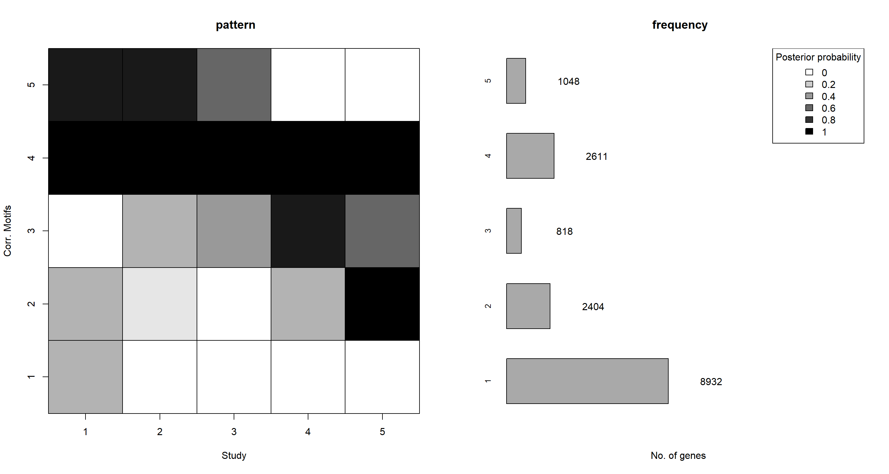
motif.fitted <- readRDS("data/Cormotif/concat/CorMotif_species_k1_k20_No4_seed8_Computer.RDS")
plotIC(motif.fitted)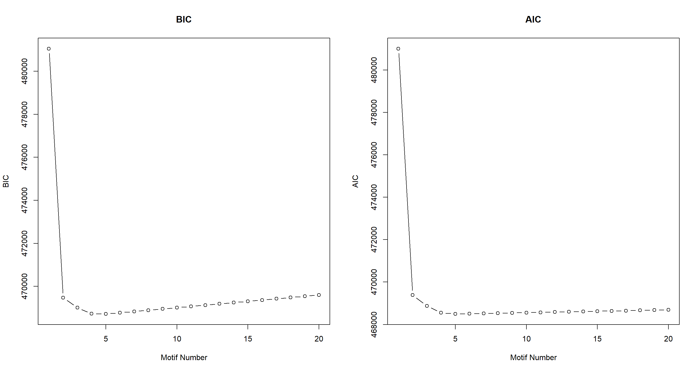
plotMotif(motif.fitted)
cols <- gray(seq(1, 0, length.out = 6))
legend(
"topright",
legend = seq(0, 1, length.out = 6),
fill = cols,
border = "black",
title = "Posterior probability")
motif.fitted <- readRDS("data/Cormotif/concat/CorMotif_species_k1_k20_No4_seed8_Computer.RDS")
motif.fit <- motif.fitted
log2cpm <- Filt_logcpm_G1_SpTp_RNA_log2cpm_No4_NoRep
TopTable <- readRDS("data/DGE/TopTable_Filt_logcpm_G1_SpTp_RNA_fc_NoRep_No4.RDS")
#extract the posterior probability that these genes belong to motifs
gene_prob_ppost <- motif.fit$bestmotif$p.post
rownames(gene_prob_ppost) <- rownames(log2cpm)
# saveRDS(gene_prob_ppost,"data/Cormotif/Species/RNA_gene_prob_ppost_Species.RDS")
#assign each gene to a motif with max post prob
assigned_motifs <- apply(gene_prob_ppost, 1, which.max)
max_probs <- apply(gene_prob_ppost, 1, max)
#combine these into a dataframe - motif assigned genes (p.post)
motif_assignment_df <- gene_prob_ppost %>%
as.data.frame() %>%
rownames_to_column("Gene") %>%
mutate(
Assigned_Motif = assigned_motifs[Gene],
Max_Probability = max_probs[Gene]
)
#make some histograms of the unfiltered data from Cormotif p.post
gene_prob_ppost %>%
as.data.frame() %>%
ggplot(., aes(x = V1))+
geom_histogram(bins = 50)+
xlim(0,1)+
ggtitle("Cormtif p.post RNA V1")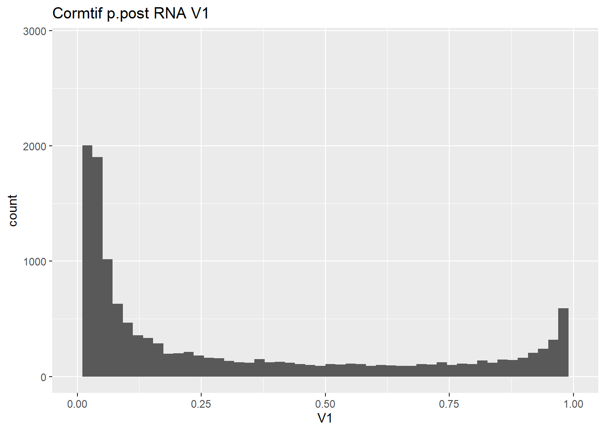
gene_prob_ppost %>%
as.data.frame() %>%
ggplot(., aes(x = V2))+
geom_histogram(bins = 50)+
xlim(0,1)+
ggtitle("Cormtif p.post RNA V2")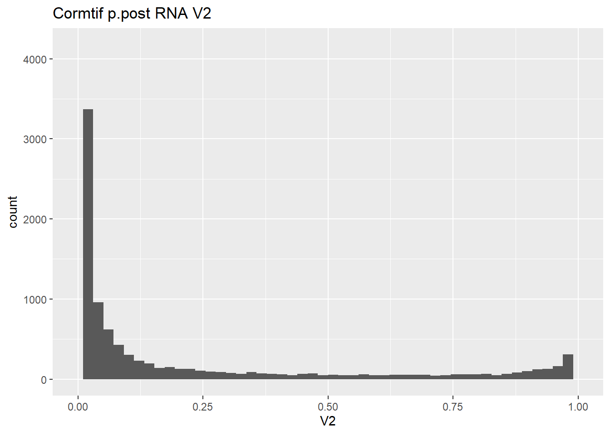
gene_prob_ppost %>%
as.data.frame() %>%
ggplot(., aes(x = V3))+
geom_histogram(bins = 50)+
xlim(0,1)+
ggtitle("Cormtif p.post RNA V3")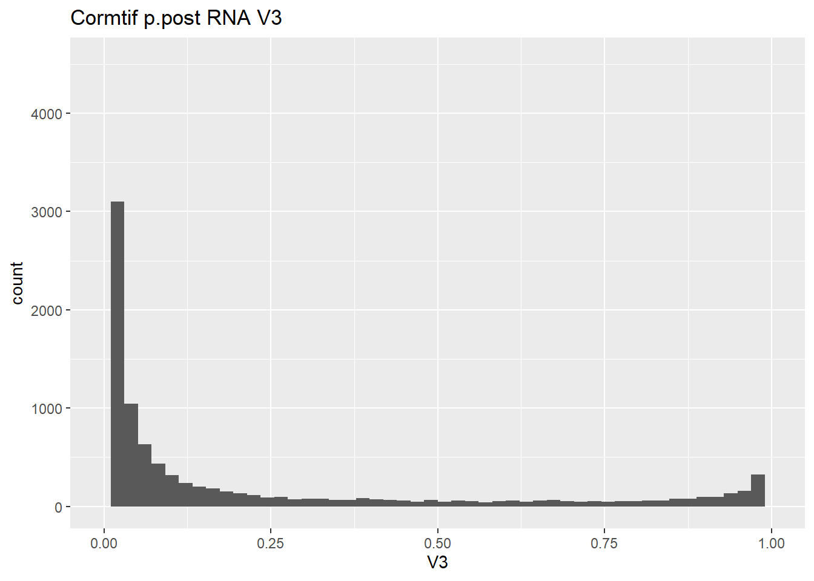
gene_prob_ppost %>%
as.data.frame() %>%
ggplot(., aes(x = V4))+
geom_histogram(bins = 50)+
xlim(0,1)+
ggtitle("Cormtif p.post RNA V4")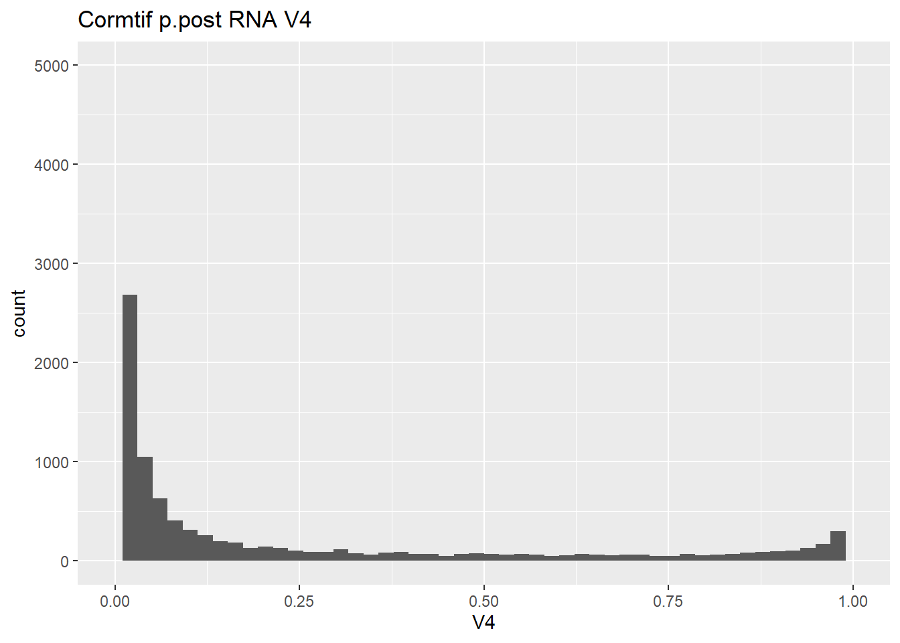
gene_prob_ppost %>%
as.data.frame() %>%
ggplot(., aes(x = V5))+
geom_histogram(bins = 50)+
xlim(0,1)+
ggtitle("Cormtif p.post RNA V5")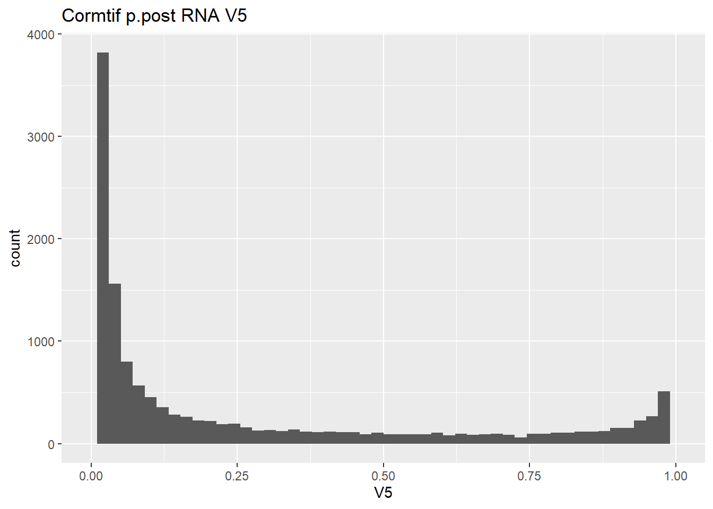
motif.fitted <- readRDS("data/Cormotif/concat/CorMotif_species_k1_k20_No4_seed8_Computer.RDS")
TopTable <- readRDS("data/DGE/TopTable_Filt_logcpm_G1_SpTp_RNA_fc_NoRep_No4.RDS")
motif.fit <- motif.fitted
log2cpm <- Filt_logcpm_G1_SpTp_RNA_log2cpm_No4_NoRep
# Extract cluster probabilities
motif_prob <- motif.fit$bestmotif$clustlike
rownames(motif_prob) <- rownames(gene_prob_ppost)
saveRDS(
motif_prob,
"data/Cormotif/Species/RNA_motif_prob_Species.RDS"
)
# Keep species comparisons only
TopTable <- TopTable %>%
filter(
Comparisons %in% c(
"HvC_Day0",
"HvC_Day2",
"HvC_Day5",
"HvC_Day15",
"HvC_Day30"
)
)
# Define clusters
clust1_RNA <- motif_prob %>%
as.data.frame() %>%
filter(V1 > 0.59, V2 < 0.5, V3 < 0.5, V4 < 0.5, V5 < 0.5) %>%
rownames()
clust2_RNA <- motif_prob %>%
as.data.frame() %>%
filter(V1 < 0.59, V2 > 0.5, V3 < 0.5, V4 < 0.5, V5 < 0.5) %>%
rownames()
clust3_RNA <- motif_prob %>%
as.data.frame() %>%
filter(V1 < 0.59, V2 < 0.5, V3 > 0.5, V4 < 0.5, V5 < 0.5) %>%
rownames()
clust4_RNA <- motif_prob %>%
as.data.frame() %>%
filter(V1 < 0.59, V2 < 0.5, V3 < 0.5, V4 > 0.5, V5 < 0.5) %>%
rownames()
clust5_RNA <- motif_prob %>%
as.data.frame() %>%
filter(V1 < 0.59, V2 < 0.5, V3 < 0.5, V4 < 0.5, V5 > 0.5) %>%
rownames()
# Cluster list
clust_names_list <- list(
clust1 = clust1_RNA,
clust2 = clust2_RNA,
clust3 = clust3_RNA,
clust4 = clust4_RNA,
clust5 = clust5_RNA
)
# Check sizes
sapply(clust_names_list, length)clust1 clust2 clust3 clust4 clust5
8830 1824 208 2463 603 # Overlap
overlap_matrix <- check_overlap(clust_names_list)
print(overlap_matrix)$clust1
clust1 clust2 clust3 clust4 clust5
NA 0 0 0 0
$clust2
clust1 clust2 clust3 clust4 clust5
0 NA 0 0 0
$clust3
clust1 clust2 clust3 clust4 clust5
0 0 NA 0 0
$clust4
clust1 clust2 clust3 clust4 clust5
0 0 0 NA 0
$clust5
clust1 clust2 clust3 clust4 clust5
0 0 0 0 NA TopTable$AbsFC <- abs(TopTable$logFC)
# FC plots
cluster_plots <- lapply(names(clust_names_list), function(clust_name) {
plot_cluster_fc_sig_species(
clust_names_list[[clust_name]],
clust_name,
TopTable
)
})clust1 : 44150 rows, 8830 unique genes
Pairwise comparisons using Wilcoxon rank sum test with continuity correction
data: df$logFC and df$Comparisons
HvC_Day0 HvC_Day2 HvC_Day5 HvC_Day15
HvC_Day2 9.1e-08 - - -
HvC_Day5 0.015 0.018 - -
HvC_Day15 4.2e-09 0.817 0.021 -
HvC_Day30 4.2e-09 0.957 0.008 0.949
P value adjustment method: BH
clust2 : 9120 rows, 1824 unique genes
Pairwise comparisons using Wilcoxon rank sum test with continuity correction
data: df$logFC and df$Comparisons
HvC_Day0 HvC_Day2 HvC_Day5 HvC_Day15
HvC_Day2 < 2e-16 - - -
HvC_Day5 1.0e-15 0.0009 - -
HvC_Day15 2.2e-15 0.0008 0.7492 -
HvC_Day30 0.2263 < 2e-16 < 2e-16 2.2e-15
P value adjustment method: BH
clust3 : 1040 rows, 208 unique genes
Pairwise comparisons using Wilcoxon rank sum test with continuity correction
data: df$logFC and df$Comparisons
HvC_Day0 HvC_Day2 HvC_Day5 HvC_Day15
HvC_Day2 3.5e-05 - - -
HvC_Day5 0.00207 0.54048 - -
HvC_Day15 0.00013 0.00646 0.00622 -
HvC_Day30 0.00221 0.53985 0.14399 0.00041
P value adjustment method: BH
clust4 : 12315 rows, 2463 unique genes
Pairwise comparisons using Wilcoxon rank sum test with continuity correction
data: df$logFC and df$Comparisons
HvC_Day0 HvC_Day2 HvC_Day5 HvC_Day15
HvC_Day2 0.00474 - - -
HvC_Day5 0.12122 0.26108 - -
HvC_Day15 0.00093 0.54146 0.08242 -
HvC_Day30 0.01087 0.78523 0.37724 0.38035
P value adjustment method: BH
clust5 : 3015 rows, 603 unique genes
Pairwise comparisons using Wilcoxon rank sum test with continuity correction
data: df$logFC and df$Comparisons
HvC_Day0 HvC_Day2 HvC_Day5 HvC_Day15
HvC_Day2 0.010 - - -
HvC_Day5 0.613 0.042 - -
HvC_Day15 0.478 0.157 0.511 -
HvC_Day30 0.979 0.017 0.918 0.478
P value adjustment method: BH for (p in cluster_plots) {
if (!is.null(p)) print(p)
}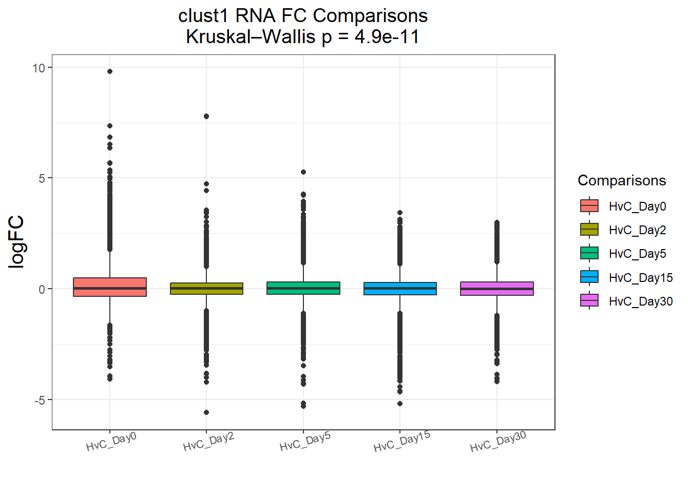
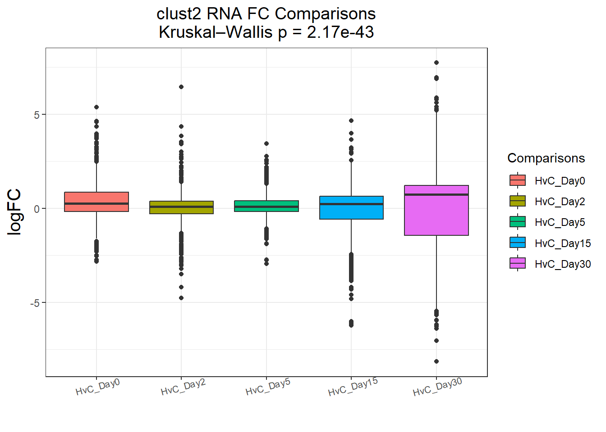
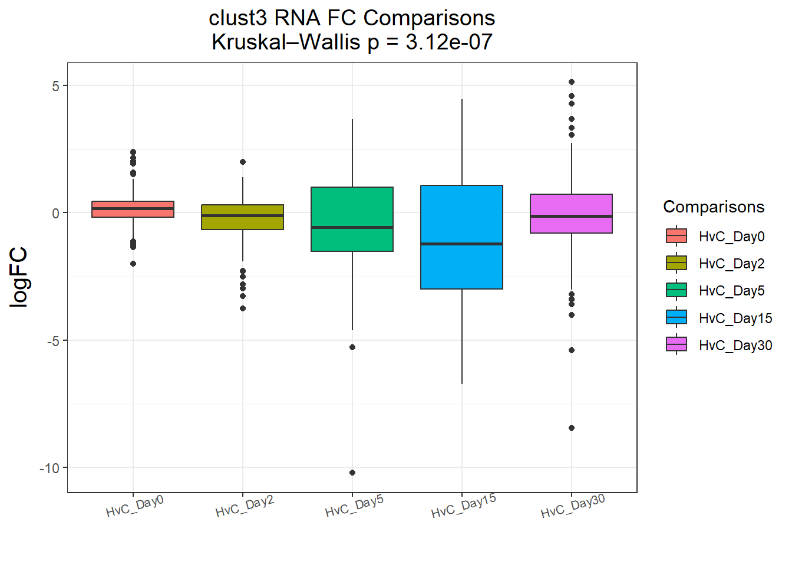
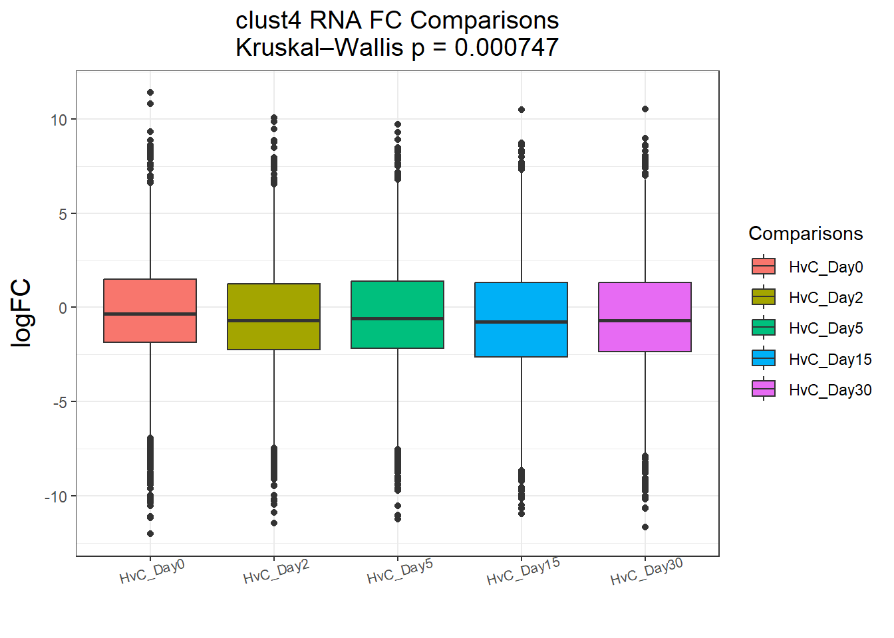
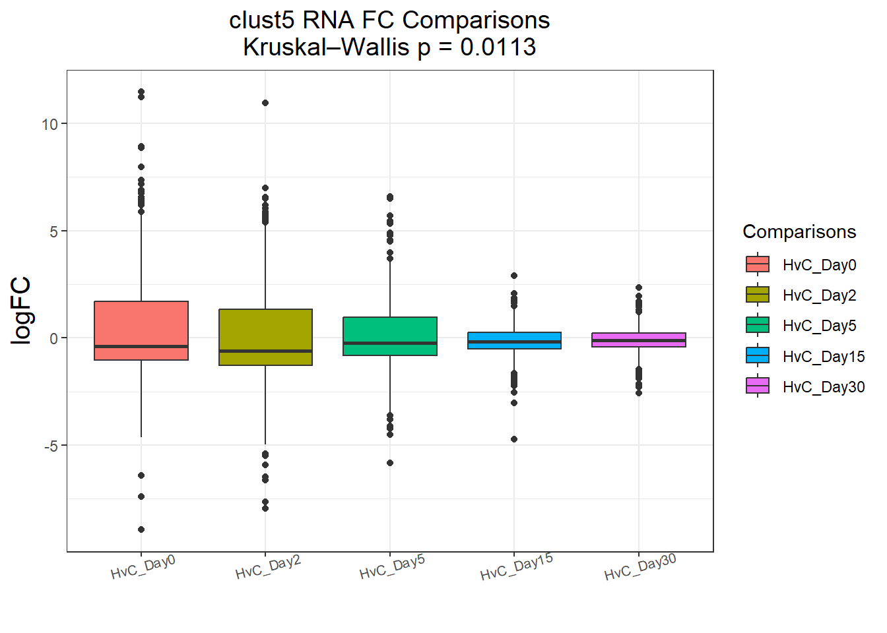
# AbsFC plots
cluster_plots <- lapply(names(clust_names_list), function(clust_name) {
plot_cluster_absfc_sig_species(
clust_names_list[[clust_name]],
clust_name,
TopTable
)
})clust1 : 44150 rows, 8830 unique genes
Pairwise comparisons using Wilcoxon rank sum test with continuity correction
data: df$logFC and df$Comparisons
HvC_Day0 HvC_Day2 HvC_Day5 HvC_Day15
HvC_Day2 9.1e-08 - - -
HvC_Day5 0.015 0.018 - -
HvC_Day15 4.2e-09 0.817 0.021 -
HvC_Day30 4.2e-09 0.957 0.008 0.949
P value adjustment method: BH
clust2 : 9120 rows, 1824 unique genes
Pairwise comparisons using Wilcoxon rank sum test with continuity correction
data: df$logFC and df$Comparisons
HvC_Day0 HvC_Day2 HvC_Day5 HvC_Day15
HvC_Day2 < 2e-16 - - -
HvC_Day5 1.0e-15 0.0009 - -
HvC_Day15 2.2e-15 0.0008 0.7492 -
HvC_Day30 0.2263 < 2e-16 < 2e-16 2.2e-15
P value adjustment method: BH
clust3 : 1040 rows, 208 unique genes
Pairwise comparisons using Wilcoxon rank sum test with continuity correction
data: df$logFC and df$Comparisons
HvC_Day0 HvC_Day2 HvC_Day5 HvC_Day15
HvC_Day2 3.5e-05 - - -
HvC_Day5 0.00207 0.54048 - -
HvC_Day15 0.00013 0.00646 0.00622 -
HvC_Day30 0.00221 0.53985 0.14399 0.00041
P value adjustment method: BH
clust4 : 12315 rows, 2463 unique genes
Pairwise comparisons using Wilcoxon rank sum test with continuity correction
data: df$logFC and df$Comparisons
HvC_Day0 HvC_Day2 HvC_Day5 HvC_Day15
HvC_Day2 0.00474 - - -
HvC_Day5 0.12122 0.26108 - -
HvC_Day15 0.00093 0.54146 0.08242 -
HvC_Day30 0.01087 0.78523 0.37724 0.38035
P value adjustment method: BH
clust5 : 3015 rows, 603 unique genes
Pairwise comparisons using Wilcoxon rank sum test with continuity correction
data: df$logFC and df$Comparisons
HvC_Day0 HvC_Day2 HvC_Day5 HvC_Day15
HvC_Day2 0.010 - - -
HvC_Day5 0.613 0.042 - -
HvC_Day15 0.478 0.157 0.511 -
HvC_Day30 0.979 0.017 0.918 0.478
P value adjustment method: BH for (p in cluster_plots) {
if (!is.null(p)) print(p)
}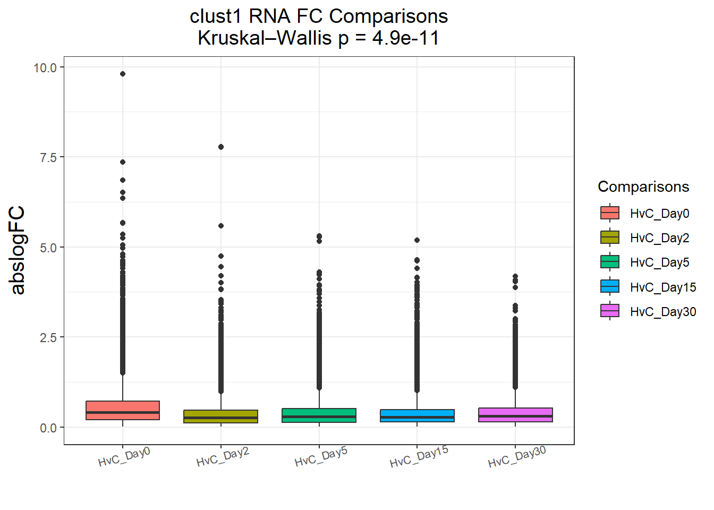
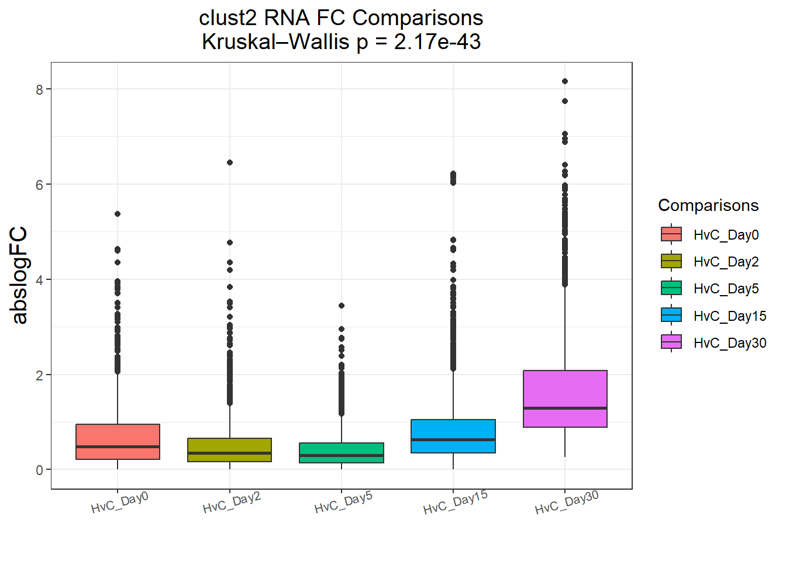
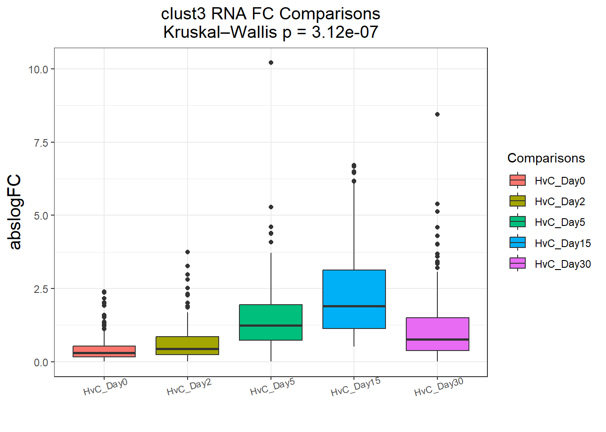
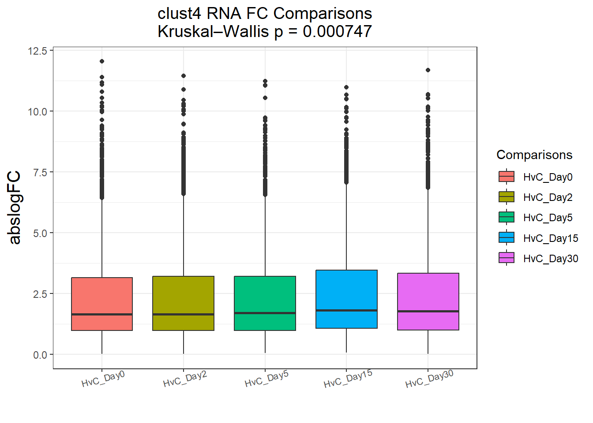
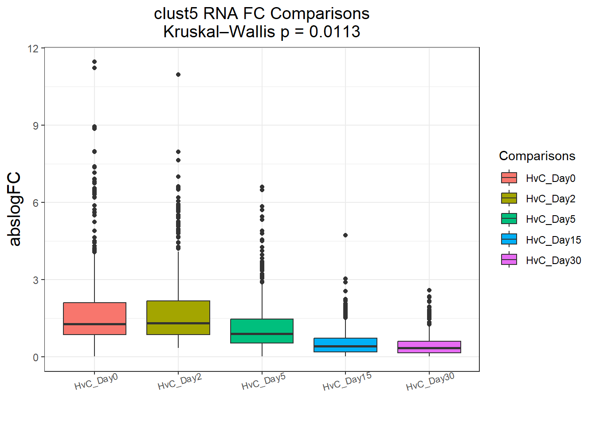
clust_names_list <- list(
clust1_RNA,
clust2_RNA,
clust3_RNA,
clust4_RNA,
clust5_RNA
)
names(clust_names_list) <- paste0("clust", 1:5)
print(overlap_matirx <- check_overlap(clust_names_list))$clust1
clust1 clust2 clust3 clust4 clust5
NA 0 0 0 0
$clust2
clust1 clust2 clust3 clust4 clust5
0 NA 0 0 0
$clust3
clust1 clust2 clust3 clust4 clust5
0 0 NA 0 0
$clust4
clust1 clust2 clust3 clust4 clust5
0 0 0 NA 0
$clust5
clust1 clust2 clust3 clust4 clust5
0 0 0 0 NA all_genes <- unique(TopTable$Gene)
convert_to_entrez_df <- function(genes) {
genes <- sub("\\..*", "", genes)
bitr(
genes,
fromType = "ENSEMBL",
toType = "ENTREZID",
OrgDb = org.Hs.eg.db
) %>% distinct()
}
background_entrez <- convert_to_entrez_df(all_genes)$ENTREZID
gost_results <- setNames(
lapply(names(clust_names_list), function(clust_name) {
genes <- clust_names_list[[clust_name]]
entrez_df <- convert_to_entrez_df(genes)
if (nrow(entrez_df) == 0) return(NULL)
gost(
query = entrez_df$ENTREZID,
organism = "hsapiens",
significant = FALSE,
ordered_query = FALSE, # TRUE only if ranked
domain_scope = "custom",
measure_underrepresentation = FALSE,
evcodes = FALSE,
numeric_ns = "ENTREZGENE",
user_threshold = 0.05,
correction_method = "fdr",
custom_bg = background_entrez,
sources = c("GO:BP", "KEGG")
)
}),
names(clust_names_list)
)
gost_results <- readRDS("data/Cormotif/concat/gost_all_clusters_species.RDS")
gost_combined <- do.call(rbind, lapply(names(gost_results), function(clust_name) {
res <- gost_results[[clust_name]]
if (is.null(res)) return(NULL)
df <- res$result
df$Cluster <- clust_name
df
}))
saveRDS(gost_results, "data/Cormotif/concat/gost_all_clusters_species.RDS")
gost_export <- gost_combined
gost_export[] <- lapply(gost_export, function(col) {
if (is.list(col)) {
sapply(col, paste, collapse = ";")
} else {
col
}
})
write.csv(gost_export,
"data/Cormotif/concat/gost_all_clusters_species.csv",
row.names = FALSE)top_terms <- gost_combined %>%
filter(source == "GO:BP") %>% # keep only BP terms
group_by(Cluster) %>%
slice_min(p_value, n = 20) %>% # top 10 per cluster
ungroup()
cluster_list <- split(top_terms, top_terms$Cluster)
library(ggplot2)
for (clust_name in names(cluster_list)) {
df <- cluster_list[[clust_name]]
p <- ggplot(df,
aes(x = Cluster, y = term_name, fill = -log10(p_value))) +
geom_tile(color = "white") +
scale_fill_gradient(low = "grey90", high = "firebrick") +
labs(fill = "-log10(p-value)",
x = "Cluster",
y = "GO Term") +
theme_minimal() +
theme(axis.text.y = element_text(size = 8))
print(p) # display in RStudio
# Optional: save each plot as a file
ggsave(filename = paste0("GO_heatmap_", clust_name, ".png"),
plot = p,
width = 6, height = 4)
}


library(dplyr)
library(ggplot2)
top_terms <- gost_combined %>%
filter(source == "GO:BP",
p_value < 0.05) %>%
group_by(Cluster) %>%
slice_min(p_value, n = 20, with_ties = FALSE) %>%
ungroup() %>%
mutate(
Cluster_num = as.numeric(gsub("clust", "", Cluster)),
term_label = paste0(Cluster, " : ", term_name)
) %>%
arrange(desc(Cluster_num))
top_terms$term_label <- factor(
top_terms$term_label,
levels = rev(top_terms$term_label)
)
ggplot(top_terms,
aes(x = 1,
y = term_label,
fill = -log10(p_value))) +
geom_tile(color = "white", width = 0.8) +
geom_text(aes(label = Cluster), size = 3) +
scale_fill_gradient(low = "grey90", high = "firebrick") +
labs(fill = "-log10(p-value)",
x = NULL,
y = NULL) +
theme_minimal() +
theme(
axis.text.x = element_blank(),
axis.ticks.x = element_blank(),
axis.text.y = element_text(size = 8),
panel.grid = element_blank()
)
# git -> commit all changes
# git -> push
wflow_publish("analysis/RNA_Cormotif.Rmd")
sessionInfo()R version 4.6.1 (2026-06-24 ucrt)
Platform: x86_64-w64-mingw32/x64
Running under: Windows 11 x64 (build 26100)
Matrix products: default
LAPACK version 3.12.1
locale:
[1] LC_COLLATE=English_United States.utf8
[2] LC_CTYPE=English_United States.utf8
[3] LC_MONETARY=English_United States.utf8
[4] LC_NUMERIC=C
[5] LC_TIME=English_United States.utf8
time zone: America/Chicago
tzcode source: internal
attached base packages:
[1] grid stats4 stats graphics grDevices utils datasets
[8] methods base
other attached packages:
[1] Cormotif_1.58.0 affy_1.90.0
[3] gprofiler2_0.2.4 enrichplot_1.32.0
[5] clusterProfiler_4.20.0 ComplexHeatmap_2.28.0
[7] ggfortify_0.4.19 readxl_1.5.0
[9] RUVSeq_1.46.0 EDASeq_2.46.0
[11] ShortRead_1.70.0 GenomicAlignments_1.48.0
[13] SummarizedExperiment_1.42.0 MatrixGenerics_1.24.0
[15] matrixStats_1.5.0 Rsamtools_2.28.0
[17] GenomicRanges_1.64.0 Biostrings_2.80.1
[19] Seqinfo_1.2.0 XVector_0.52.0
[21] BiocParallel_1.46.0 lubridate_1.9.5
[23] forcats_1.0.1 stringr_1.6.0
[25] purrr_1.2.2 tidyr_1.3.2
[27] tidyverse_2.0.0 pheatmap_1.0.13
[29] org.Hs.eg.db_3.23.1 AnnotationDbi_1.74.0
[31] IRanges_2.46.0 S4Vectors_0.50.1
[33] Biobase_2.72.0 BiocGenerics_0.58.1
[35] generics_0.1.4 readr_2.2.0
[37] ggrepel_0.9.8 dplyr_1.2.1
[39] tibble_3.3.1 ggplot2_4.0.3
[41] edgeR_4.10.1 limma_3.68.4
[43] workflowr_1.7.2
loaded via a namespace (and not attached):
[1] fs_2.1.0 bitops_1.0-9 httr_1.4.8
[4] RColorBrewer_1.1-3 doParallel_1.0.17 tools_4.6.1
[7] R6_2.6.1 lazyeval_0.2.3 GetoptLong_1.1.1
[10] withr_3.0.3 prettyunits_1.2.0 gridExtra_2.3.1
[13] preprocessCore_1.74.0 textshaping_1.0.5 cli_3.6.6
[16] Cairo_1.7-0 scatterpie_0.2.6 labeling_0.4.3
[19] sass_0.4.10 S7_0.2.2 systemfonts_1.3.2
[22] yulab.utils_0.2.4 gson_0.2.0 DOSE_4.6.0
[25] R.utils_2.13.0 rstudioapi_0.19.0 RSQLite_3.53.3
[28] gridGraphics_0.5-1 shape_1.4.6.1 BiocIO_1.22.0
[31] hwriter_1.3.2.1 GO.db_3.23.1 Matrix_1.7-5
[34] interp_1.1-6 abind_1.4-8 R.methodsS3_1.8.2
[37] lifecycle_1.0.5 whisker_0.4.1 yaml_2.3.12
[40] qvalue_2.44.0 SparseArray_1.12.2 BiocFileCache_3.2.0
[43] blob_1.3.0 promises_1.5.0 crayon_1.5.3
[46] pwalign_1.8.0 ggtangle_0.1.2 lattice_0.22-9
[49] GenomicFeatures_1.64.0 cigarillo_1.2.0 KEGGREST_1.52.2
[52] pillar_1.11.1 knitr_1.51 rjson_0.2.23
[55] codetools_0.2-20 glue_1.8.1 ggiraph_0.9.6
[58] getPass_0.2-4 ggfun_0.2.1 fontLiberation_0.1.0
[61] data.table_1.18.4 vctrs_0.7.3 png_0.1-9
[64] treeio_1.36.1 cellranger_1.1.0 gtable_0.3.6
[67] cachem_1.1.0 aroma.light_3.42.0 xfun_0.59
[70] S4Arrays_1.12.0 aisdk_1.4.12 iterators_1.0.14
[73] statmod_1.5.2 nlme_3.1-169 ggtree_4.2.0
[76] bit64_4.8.2 fontquiver_0.2.1 progress_1.2.3
[79] filelock_1.0.3 rprojroot_2.1.1 bslib_0.11.0
[82] affyio_1.82.0 otel_0.2.0 colorspace_2.1-2
[85] DBI_1.3.0 tidyselect_1.2.1 processx_3.9.0
[88] bit_4.6.0 compiler_4.6.1 curl_7.1.0
[91] git2r_0.36.2 httr2_1.2.3 fontBitstreamVera_0.1.1
[94] DelayedArray_0.38.2 plotly_4.12.0 rtracklayer_1.72.0
[97] scales_1.4.0 callr_3.8.0 rappdirs_0.3.4
[100] digest_0.6.39 rmarkdown_2.31 htmltools_0.5.9
[103] pkgconfig_2.0.3 jpeg_0.1-11 dbplyr_2.6.0
[106] fastmap_1.2.0 rlang_1.2.0 GlobalOptions_0.1.4
[109] htmlwidgets_1.6.4 farver_2.1.2 jquerylib_0.1.4
[112] jsonlite_2.0.0 GOSemSim_2.38.3 R.oo_1.27.1
[115] RCurl_1.98-1.19 magrittr_2.0.5 ggplotify_0.1.3
[118] patchwork_1.3.2 Rcpp_1.1.1-1.1 ape_5.8-1
[121] ggnewscale_0.5.2 gdtools_0.5.1 stringi_1.8.7
[124] MASS_7.3-65 plyr_1.8.9 parallel_4.6.1
[127] deldir_2.0-4 splines_4.6.1 hms_1.1.4
[130] circlize_0.4.18 locfit_1.5-9.12 igraph_2.3.3
[133] enrichit_0.2.0 reshape2_1.4.5 biomaRt_2.68.0
[136] XML_3.99-0.23 evaluate_1.0.5 latticeExtra_0.6-31
[139] BiocManager_1.30.27 tzdb_0.5.0 foreach_1.5.2
[142] tweenr_2.0.3 httpuv_1.6.17 polyclip_1.10-7
[145] clue_0.3-68 ggforce_0.5.0 restfulr_0.0.17
[148] tidytree_0.4.8 tidydr_0.0.6 later_1.4.8
[151] ragg_1.5.2 viridisLite_0.4.3 aplot_0.3.1
[154] memoise_2.0.1 cluster_2.1.8.2 timechange_0.4.0